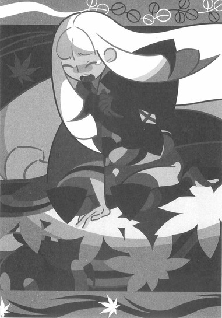
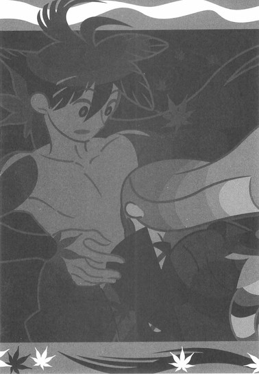

| [西尾維新] 刀語05 | |
| 西尾維新 | |
| (2015) | |
|
刀語 第五話 賊刀・鎧
西尾維新
|
底本データ
一頁16行 一行42文字 段組１段
「ツルギ」、以後「ツルギ」に置換え注略。
「おれはとがめに惚れてるんだからよ──裏切るわけがねえだろうが」
薩摩の港町を一手に仕切り、
賊刀『鎧』を所有する鎧海賊団船長・校倉必。
〝日本最強〟を襲名した無刀の剣士・鑢七花と、
変体刀を蒐集する美貌の奇策士・とがめは、
〝あるもの〟を賭けての勝負を
校倉から挑まれる──！
〝愛〟に戸惑い、苦悩し鈍る七花の剣先──!?
刀語、第五話の対戦相手は、
絶対の防御力を誇る鎧海賊団船長、校倉必！

序章
■ ■
尾張城下町の一角にある、雑木林に囲まれた武家屋敷──その一室に、何をするでもなく、直立してたたずむひとりの女の姿があった。夜もすっかり更けた頃合いだというのに灯りもつけず、かといって布団も敷かず、ただ、ひとり、部屋の真ん中に突っ立って──それは何かを待っているかのようだった。
事実、女は待っていた。
そしてそれは、ほどなく天井から聞こえてきた。
「──さま」
声はすれども姿は見えず。
真上からのその声に、女はわずかに眉を動かしただけで、直立の姿勢を少しも崩そうとはしない──上を向こうともしない。視線は閉じられた障子の向こう側を見ているようでいて──しかし、何も見ていないようでもあった。
あるいは、常に自身の内面でも覗き込んでいるかのような。
そんな、人間性に欠けた眼だった。
「遅いわ」
女がまず言ったのは、そんな言葉だ。
「いつまで待たせる気よ──この愚か者」
「申し訳ありません。ただ、監視の目をかいくぐるのにはどうしても時間が──」
「言い訳など聞きたくはないわ。そんなものを聞いてもわたしの怒りが冷めることなどない──取り戻したければ働きで取り戻すがいいわ。あんたは報告だけをすればいいのよ。あの不愉快な女は──どうなったのかしら」
あの不愉快な女。
そういうときの彼女の口調は、必要以上に乱雑な、吐き捨てるようなものだった──そこには過剰に含まれた、何らかの感情があるようだ。ただし、乱雑になったのはあくまでも口調だけであり、女の表情、視線、あるいは態度は、微動だにしない。
「は」
天井裏から、頷く声。
「かの奇策士は、現在、九州は薩摩へと向かっております──恐らくはそろそろ、到着した頃合ではないかと」
「薩摩か。となると──目標は賊刀『鎧』というわけね。ふん──随分と調子に乗っているようじゃない」
「無理もないかと。既に彼女は、旧将軍でさえ一本すら集め得なかった四季崎記紀の作りし完成形変体刀十二本、そのうち四本までを、集めせしめたのですから」
絶刀『鉋』。
斬刀『鈍』。
千刀『ツルギ』。
薄刀『針』。
四季崎記紀の完成形変体刀十二本──
「──特に、日本最強の剣士、錆白兵を打破しての薄刀『針』蒐集は、彼女たちにとって大きな経験値稼ぎになったでしょう。本来は千刀を蒐集したところで尾張に戻ってくる予定だったようですが、想定外の錆白兵との戦いを経ての予定変更、薩摩へ向かったくらいですから」
「錆白兵ね」
ここで初めて──女は笑んだ。
微笑らしい、表情を作った。
「愚かしい──わたしが日本最強に据えてやった男に勝ったくらいのことで、調子に乗るなんて──しかしあの女らしいと言えばあの女らしいわ」
「とは言え──侮れません」
天井裏からの声は言う。
「奇策士のことはもちろんですが、今彼女が連れている剣士──」
「ああ──虚刀流の七代目」
だっけ、と女は記憶を探るように言った。
「無刀の剣士......なんて言ったかしら」
「鑢七花です。あの男は──相当に腕が立つ。長きに亘る無人島暮らしゆえに、実戦経験には欠けますが──」
「そのあたりは以前にも報告を受けたから、省略していいわ──でも実際、どうだったの？その虚刀流の子と、錆との戦い──あんたの見たところ、どんな感じだったのかしら？」
「激戦ではありました。それも終始、錆白兵が優勢に戦闘を進めたと言ってよいでしょう──鑢七花は押されっぱなしでした。最終的に鑢七花が勝利を収めたのは、ほとんど偶然の力によると言っても過言ではありません──」
「でしょうね。曲がりなりにも、錆白兵はわたしが選んだ最強の剣士──なのだから」
「しかし」
女の言葉を受け、天井裏からの声は言う。
「鑢七花は錆白兵の剣技に正面から相対して、ひとつの手傷も負っておりません」
「..................」
「錆との戦闘に限りません。鑢七花は刀集めの旅の道中、一度も、ただの一度も──敵からの攻撃を、その身に受けておりません」
「かすり傷ひとつ──かしら」
「かすり傷ひとつ──です」
興味をそそられた風な女の反応を肯定する、天井裏からの声。
「宇練銀閣の居合いも敦賀迷彩の千刀も──彼の身体を傷つけるには至っておりません。その肉体を一本の刀として鍛え上げる虚刀流──しかしその流派の特筆すべき点は、攻撃力ではなくむしろ防御力にあると言わざるをえません。そして長期的な眼で見れば、いくさ場においては、攻撃力よりは防御力のほうが重視されるのは明白──」
「あの女の刀集めには、うってつけってわけね」
ふん、と悪態をつく風を見せる女。
「真庭忍軍、錆白兵と、二連続で裏切られたあとの癖に、随分といいくじを引くじゃない──相変わらず悪運の強い女だわ。でも──そうなると、この先の展開が楽しみね」
「は？」
「だってそうでしょう──あの女と虚刀流の組み合わせが次に蒐集せんとする完成形変体刀、賊刀『鎧』は、絶大なる防御力を誇る守りの刀じゃないの。旧将軍が海賊取締令なんて法令を出してなお、蒐集できなかった刀。その防御力の高さは折り紙つきだわ。防御力対防御力──さて、どうなることやら」
「楽しそう──ですね」
ん？ と、天井裏の声に反応する女。
そして、それから本当に──楽しそうに笑う。
「ええ──そうね、いい見世物だわ。今のところはね。ただし、いよいよあの女が五本目に手を出そうというのなら、そろそろわたしも動かないといけない時期なのかもしれないわ。いいえ──時機かしら」
「......では」
「いえ、動くは動くけれど、とりあえず──あの女については今のところは、監視を続けるだけでいい。もう少しの間、泳がしておきましょう。監視から管理に切り替えるのは、そうね──八本目か、九本目に手を出す頃でいいわ。調子に乗って随分と寄り道をしているようだけれど、さすがにそれまでには、一度はここ、尾張に戻ってくるでしょうからね。だからわたしが動くのは──別方向よ」
「しかし──それまでに奇策士たちが、刀集めの中途で討ち死にする可能性も──」
「それならそれで構わないわ。既に四本集めている──正直言って、既にあの女は、期待以上の働きを見せてくれていると言っていい。錆がこんなに早く倒されたことも含め、予想外と言えば既に予想外なのよ。だから、そこから先を引き継ぐのはそんなに難しいことじゃない──まあ、わたしとしてはできる限り目立つ動きは避けたいのだけれど」
「そうですね......表向きの動きは、できる限り彼女たちに担当してもらいたいところです」
「とは言え楽観は禁物よ。あんたの言う通り、八本目どころか、五本目の賊刀『鎧』さえ蒐集できるかどうかわからないのだから。奇策士というだけあって、あの女のやることには失敗と成功の幅が大き過ぎる──まあ、それも無理からぬことなのかしら。伝説の刀鍛冶、四季崎記紀の作りし変体刀を、所詮はただの刀としか思っていない、己の出世の手段としか思っていないあの女の考えることなのだから──」
わたしならもっと慎重にやるけれどね──と、女は言った。
「──で、他に報告事項は？」
「真庭忍軍の動向は、相変わらずつかめません。十二頭領のうち、真庭蝙蝠、真庭白鷺、真庭喰鮫の三人が、奇策士の刀集めの旅の途上に登場し、討ち死にしたのはこれまでの報告の通りですが──他の九人の頭領については依然不明です」
「あっそ......忍者ってのはどうしてこう──おっと失礼。あんたもそもそもは忍者なのだっけ──まあいいわ。じゃ、戻っていいわよ。お疲れさま」
「は」
頷く声があって──しかし、その後は、物音ひとつしない。天井裏から移動するような音さえなかったが──既にそこには誰もいなくなったようだった。まるで声だけがそこに存在していたかのような、そんな不可思議な状況だった。
「さてと──どうなることかしら」
女は、それでも──しばらく、そのままの姿勢で、動こうとはしなかった。ただひとり、部屋の真ん中に立って──それは何かを待っているかのようだった。
何を待っているのかは、今のところ、わからない。
■ ■
奇策士とがめ、真庭忍軍。
そしていよいよ第三の勢力登場か？
中枢尾張で不穏な動きが見え隠れする中、刀集めの旅はついに九州へ！
敵は海賊！
果たして賊刀『鎧』とは!?
対戦格刀剣花絵巻！
悲劇惨劇無惨劇！
刀語の第五巻♪
一章 鎧海賊団
■ ■
町の中心に位置するその建造物は、大盆と呼ばれていた──とはいえ、それは建造物と表現するのには若干のためらいを覚えるほど、簡素なつくりである。円状に組まれた木製の格子状の背の高い柵──柵の中がよく見えるように、目の粗い格子。その円は半径十丈ほどの大ささで、円の内側にはまんべんなく砂が敷き詰められている。恐らくはその砂は、近場の海岸から移動させてきたものだろう。
それだけの簡素なつくり。
ただ単に広場に柵を立てただけとも言える。
にもかかわらず──その場所には多くの人間が集っていた。柵の外側には群衆──そして柵の内側には、ふたりの戦士。
大盆。
そう、それは闘技場だった。
簡素なつくりなのは──いくら壊れてもすぐに修繕がきくようにという配慮なのである。
「いざ尋常に──始めっ！」
柵の外から、審判のそんな声が響く。
審判でさえ闘技場の内側に入ることはできない──大盆の中は、戦士達の聖域なのだ。
ふたりの戦士の、聖域。
ひとりは色の薄い着物姿の剣士だった。
身の丈に合わないほど大きな──むしろ巨大と言っていいほどの刀を両手で構え、対戦相手に向かっている。精悍な顔つき、精悍な目つきをした、如何にも武者修行の最中といった荒々しい風貌の剣客──たとえ素人であったとしても、彼の発する圧力からは無関係ではいられないだろう。
対して、その向かい側のひとり。
これは見た目からして剣士とは言えない──その人物は身体中のどこにも、剣どころか刀どころか、武器らしいものは何一つ帯びていなかった。
武器らしいものは。
だがしかし──これ以上ない『防具』で、その身を包んでいた。
鎧である。
それも、この国に古くから伝わる兜甲冑ではない──強いて言うなら西洋の剣士が身にまとう種類の鎧に近かった。生身をさらしている部分がどこにもない。関節部可動部は言うに及ばず、金属同士の継ぎ目も、別の部位が重なるようにうまく覆っている──太陽の光に銀色に鈍く輝くその立ち姿は、ひとつの重厚なる塊として完成しているように見えた。
そしてそれが──巨体だ。
その鎧に向けられる、剣士の持つ巨大な刀がただの普通の刀に見えてしまうほどに、その鎧武者はとにかく巨体だった。圧力など発していなくとも向かい合うだけで圧倒されそうなほどの鎧の大きさ──間違いなく七尺は超えている。
さすがに場所が闘技場の中というだけあって、その体格差に臆するような風はなかったが──しかしその異様な立ち姿が、剣士に踏み込みを躊躇させていることは確かだった。
「どうした？」
そんな剣士を挑発するように、鎧武者は言う。
野太い声だった。
「そのご自慢の刀でおれの鎧を真っ二つにするんじゃなかったのかよ──それともいざこうして向かい合うと、逃げたくなっちまったかい？」
「............くっ」
剣士は歯噛みする。
それを受け、鎧武者は更に挑発するようなことを言った。
「おいおい、情けねえな──天下一の剛剣を謳っていた割には、武器一つ持たない丸腰の男を相手に第一手を躊躇するとは──こいつはとんだお笑い種だ。前人未到の五人抜きも、こりゃまぐれだったのかな」
「──おおおおおおおおおっー」
慎重を期そうとした心に、怒りが勝ったようだった。剣士は巨大な剣を振りかぶり、鎧武者に向かって特攻した──剛剣。
技術云々よりも剣の重さ、また、その剣を振るうことのできる腕力により相手をたたっ斬る──この剣士の使う剣術は、つまりはそういうものであるらしい。重いということは等号で遅いということに結ばれるのがまず当たり前だが、しかしこの剣士は重さを等号で速さに繋げているのだ！
が──
「......否崩れ」
それに対して鎧武者が取った行動は、取り立てて意外と言えるほどのものではなく──しかし、かといって、到底納得できるようなものではなかった。自分に特攻してくる剣士に対し、己もまた特攻したのだった──『否崩れ』などと大仰な技の名前を叫んだ割に、やることと言ってはただの体当たりである。
右肩を前に構えるようにして、姿勢を低くしての──体当たり。
だが──これが速かった。
理屈は剣士の剛剣と同じである──鎧武者が着用している鎧は、近代的な軽量化の精神とはまるで縁のないそれだ。ただでさえ──鎧というだけでもただでさえそうなのに、何せ着用者を身の丈七尺以上に設定した鎧である。着て歩くどころか、ばらばらに分解して持ち運ぶことさえ難しい重さだろう。だがその重さゆえに──一度勢いに乗せてしまえば、それは止まらない。
一介の金属として。
一塊の金属として──敵に向かう。
自らも特攻していた剣士にはそれを避けるすべはない──剛剣使いの剣士だってもうさすがに、先ほど鎧武者から受けた挑発はこのための布石だったのだと思い至っているだろうが、それは既にあとの祭りだ。
ふたりは衝突する。
体格差。
それに、速度にさえも差があった。
単純な足し算引き算掛け算割り算の問題で、吹っ飛ばされたのは剣士のほうだった──着ていた着物ごと全身がずたずたになって、しばらく空中を飛んだあと、なすすべもなく地面に叩き付けられる。足場に砂が敷き詰められていることが何の助けにもならないような、それは落下だった。
剣士は起き上がらなかった。
否、もう二度と──起き上がれないかもしれない。
死んではいないようだが──意識の有無は、確認するまでもない。ただの体当たりに見えたにもかかわらず──剣士の身体は至るところが血まみれになっていた。あの一瞬の交錯の間に、果たして何があったというのか。
第一、剣士が振るった剛剣は？
鎧を叩き割るはずだったあの一撃はどうなった？
──しばらくして、空からぼろぼろと、その一撃の残骸が──雨のように、落ちてきた。粉々に砕けた、砕け散った剛剣。鎧を叩き割るはずだった一撃は──逆に、いや逆にですらない、跳ね返った衝撃で自身を砕き──文字通り、見る影もなくなったのだった。
「──決着っ！」
審判の声が響き──柵の外側で戦いを見守っていた群衆は、喝采を送った。どうやら、この大盆における戦闘行為は賭博の対象になっていたようで──木札を手に大声をあげている者がほとんどである。喜んでいる者が多いところを見ると、賭け率が高いのは鎧武者のほうだったようだ──もっともこの人気振りを見れば、大した払い戻しにもならないはずである。
つまりは賭けの勝ち負け以前に、あの鎧武者は人気者──この大盆における花形なのだ。
それもそのはず。
彼はこの港町を仕切る海賊団の船長なのだから。
この大盆も──実はその海賊団の仕切りである。
「..................」
「..................」
ほとんどの観客が、決した勝敗に歓声をあげ、鎧武者がそれに応えるように手をあげている中──ほとんど唯一、試合中と変わらず、腕を束ねて、柵の内側を注視しているもの達がいた。
豪奢な衣装を身にまとった白髪の女と──彼女を護衛するかのようにその背後に立つ、上半身はだかで背の高い、ぼさぼさ頭の男である。
「おい、とがめ──」
歓声轟き響く中、それでも用心しているのか、声を潜めて、ぼさぼさ頭の男は言う。
「刀、折れちまったぞ。どうすんだよ」
「ん──なんだ、七花」
とがめと呼ばれた白髪の女は、振り向かないままに、ぼさぼさ頭の男──七花に答える。
「そなた、またわたしの話をよく聞いていなかったようだな......あんな刀は、ただの刀に過ぎぬ。自慢の剣云々言っておったところを見ればそれなりにゆかりのある一振りなのではあったろうが、さしあたってわたしたちには関係がない。あの男はただの脇役だ。役割はこれで終了、このままずっと出てこない。わたしたちに関係があるのは──あの鎧武者のほうだ」
「鎧武者」
「そう。鎧海賊団船長、校倉必──あの男が今回の、そなたの対戦相手だ」
「ふうん──」
言われて、七花は改めて、柵の内側の鎧武者を見つめる。
と、そこでちょうど一瞬、鎧武者はこちらに向いて──七花は彼と眼が合ったかのような気分を覚える。
もちろん、錯覚だろう。
この距離だし、かの鎧武者は観客の声援に応えている最中だ──そもそも、あの鎧はずいぶんと隙のないつくりである......内側からちゃんと外が見えているのだろうか？
「じゃあ、つまりこの戦いのためには、あいつ......校倉必？校倉必は賊刀『鎧』を持ってこなかったってことか。あの対戦相手のためには、賊刀の必要なしって......ふうん。そんな弱い奴にも見えなかったけどなあ」
「否」
とがめは言う。
「あの鎧が、賊刀だ」
「......鎧が？」
「例の共感覚めいたものは感じんのか？ここからでは遠過ぎるのかな。四季崎記紀の作りし変体刀千本、うち完成形変体刀十二本が一本──賊刀『鎧』。西洋甲冑を模した防御主体の日本刀──しかし、これはまた......随分と厄介な者の手に渡っているようではないか」
とがめはやるせなさそうに──しかしそれでも、不敵に笑ってみせる。
「まあ、港に到着して早々、賊刀の所有者である校倉の戦闘を見られたのは幸運だった──七花。宿を決めるぞ。細かいことはそこで説明してやる。それからゆっくり、策を練るとしよう」
■ ■
刀語も第五話である。
今回は後半で話が大きく動くので、いわゆる『これまでのあらすじ』は早いうちに、しかも簡単に済ませておく。
..................。
..................。
昔々あるところに──一人の天才的な刀鍛冶がおりました。刀鍛冶の名前は四季崎記紀──どんな流派にも属さない、一匹狼の刀鍛冶でした。もちろん一匹狼などというのは格好つけた言い方で、実際のところの四季崎記紀は、業界からつまはじきにされていた変人です。
ただ、彼の作る刀だけは一流でした。
のちに変体刀と言われることになる彼の作る刀は、戦国の世を思うがままに支配し──世の武将達はこぞって、彼の刀を求めました。最終的には千本に達した変体刀、その所有する数が大名としての格を示す基準になるほどだったのです。
さて、そんな楽しい戦国の世にもやがて終焉が訪れます。天下布武──ついに全国制覇を成し遂げた人物が登場したのです。
のちに旧将軍と呼ばれることになる武将です。
しかし彼は、戦国の世を制したその後も、四季崎記紀の作った刀に対する執着を失いませんでした──四季崎記紀の刀の毒。既に戦いは終わり、そんなものは必要とされないのに──いつの間にか目的と手段は転倒を起こし、彼は、いくさに勝つために刀を求めるのではなく、刀を欲するがためにいくさを起こしました。
その最たる例が、刀狩令です。
大仏建立のためと銘打って、全国という全国からあますところなく、全ての刀を蒐集しようとした法令──実際、旧将軍は十万本の刀を集め、土佐は鞘走山、清涼院護剣寺に刀大仏と呼ばれる仏像を造ることとなりました。ついでに、さしあたって大人しくしていても、いずれ自分の敵に回ったかもしれない大名の国力を大幅に削ることにも成功しました。
しかしそれでも──刀は集まりきりませんでした。
既にその頃には伝説の刀鍛冶と呼ばれていた四季崎記紀の変体刀千本の中でも、もっとも完成度が高いと言われる十二本──その十二本だけがどうしても集まりませんでした。
絶刀『鉋』。
斬刀『鈍』。
千刀『ツルギ』。
薄刀『針』。
賊刀『鎧』。
双刀『鎚』。
悪刀『鐚』。
微刀『釵』。
王刀『鋸』。
誠刀『銓』。
毒刀『鍍』。
炎刀『銃』。
所在、所有者までは知れても──その場所から、その者から、その刀を奪うことは、どうしてもできませんでした。
十二連戦、十二連敗。
何度も挑戦し、そのたびに敗れていたことを思えば、実際の戦績は十二連敗どころでは済まされないでしょう。戦国を制した旧将軍も、その途方もない連敗記録にはさすがに疲弊し──今わの際には、彼の国力は五万石を切っていたとのことです。
そして時代は巡ります。
旧将軍には跡取りがいなかったため、その後の世を統べたのは、政治的手腕に優れていた家鳴家でした──家鳴将軍家が全国を支配する尾張時代の到来です。
天下泰平。
この四文字が家鳴将軍家の標語でした。
必然的に、四季崎記紀の刀は徐々に必要とされなくなっていきました──本来は旧将軍の時代からそうであるべきだったので、これは当然の成り行きと言えましょう。
刀も。
剣士も。
あるいは武士も──必要とされない世の中。
忘れられた世の中。
そもそも、最初から誰も覚えていない世の中。
そういう時代が、構築されようとしていました。
尾張幕府の開幕から百幾十年──その天下泰平もほぼ成立した、実際に戦国を知る人間がほぼ皆無となったその頃に、事件は起きました。
起きたと言うか、なんと言うか。
幕府の信頼も厚かった奥州の顔役、飛騨鷹比等が、百幾十年ぶりの、全国規模の戦乱を起こしたのです──この事件は幕府を震撼させました。
幕府側の勢力が、いい加減平和のぬるま湯に浸りすぎていたというのもあるのでしょう、この戦乱、あと一歩で幕府転覆というところにまで被害の規模が達していて──最終的に幕府側が勝利を収めたとはいえ、その勝利は後に禍根を残すものでした。家鳴幕府が掲げておくべきは天下泰平の四文字ではなく、油断大敵の四文字だったのかもしれません。
それから二十年。
かと言って、何の対策も打てないままに────戦々恐々と、二十年。
とある白髪の奇策士が言いました。
刀を集めましょう。
旧将軍ですら集められなかった刀を。
十二本の完成形変体刀を。
そして改めて幕府の力を全国に知らしめましょう──と。
紆余曲折あったものの、その大言の通り、白髪の奇策士は四季崎記紀の作りし完成形変体刀十二本、そのうち絶刀『鉋』、斬刀『鈍』、千刀『ツルギ』、薄刀『針』を蒐集しました。
真庭忍軍十二頭領、真庭蝙蝠から、決して折れない頑丈な日本刀──絶刀『鉋』を。
下酷城城主宇練銀閣から、一刀両断にできないものはない切れ味を誇る日本刀──斬刀『鈍』を。
三途神社の長、敦賀迷彩から、千本という膨大な数量を誇る日本刀、千刀『ツルギ』を。
日本最強の剣聖、錆白兵から、目を凝らさなければ見えないほど薄い日本刀──薄刀『針』を。
それぞれに蒐集しました。
蒐集する手段として白髪の奇策士が用いたのは、虚刀流という一本の刀でした──剣士でありながら武器を一切使わないことを旨とする異端の流派。
その七代目当主──鑢七花です。
..................。
..................。
......以上、これまでのあらすじ。
この物語が、『めでたしめでたし』で締められることになるのかどうかは、果たして不明である。とにかく、白髪の奇策士とがめと虚刀流七代目当主鑢七花の旅は、まだまだ続く──
■ ■
九州と言えば、今も昔もこれからも、温泉地として知られている──有名な活火山がすぐそばにあることもあり、どこを掘ってもまず温泉が湧くと言われている、骨休めの名地である。当然、この濁音港を擁する港町にも温泉宿はいくつか点在し、とがめが自分たちの当面の宿として泊まることにしたのも、温泉宿だった。
大盆での戦闘行為を見て早々、宿に這入り、ふたりは露天風呂へと向かった。思えば遠くに来たものだ──と感慨にふけるほどではないかもしれないが、たかが五ヵ月足らずで京の都から九州の薩摩までの長距離をほとんど徒歩のみで移動するという過酷な旅はふたりの身体にそれなりの疲労を蓄積しているだろう。小柄なとがめは言うに及ばず、体力筋力の化け物みたいな七花にしたって、この五ヵ月間は稽古も含め、戦闘の連続である。特に九州に入ってからはそうだった。本州からこちらに渡ってくる中途、巌流島において、日本最強の剣士、錆白兵を破ったことがどこから知れたのか、日本最強を襲名して『新日本最強』となった七花に、道すがら挑戦してくる無頼の浪人剣士が続々と現れたのだ──旅の目的地であるこの薩摩に到着するまでに、無駄とも思える戦闘を、何度も何度も経験した。肉体的にはともかく、精神的に七花が疲労していたことは間違いがなかった。
そこにきて温泉とは、まさに渡りに船。
話に聞く温泉とはどんなものなのかと、七花はとがめの誘いに一も二もなく乗った。
露天風呂。
ちなみに混浴である。
この時代にはさして珍しくもない──温泉としては、むしろ混浴のほうが主流と言えた。むろん、それでも時間をわけて入浴することは可能だったが、とがめはそれを気にする性格ではなかったし、七花はそれを気にする育ちではなかった。そもそも護衛の意味合いもある、とがめから離れずにいることができるならば、それに越したことはないのだ。
宿よりも温泉が主体の温泉宿、立派な作りの露天風呂だった。深い温泉でもなかったが、何せ小柄なとがめのこと（風呂に入るために厚着重ね着の着物を脱いでいるので、なおさら小柄に見える）普通に入ればその身は肩までつかることになる。長い白髪を手ぬぐいでまとめあげ、自分のすぐ前に、宿の従業員に用意させた盆を浮かべ、その上に載せた徳利から手酌で一杯、ほろ酔い気分である。
七花のほうはとがめとは対照的に図体がでかいので、普通につかっても上半身のほとんどは湯からはみ出しているが、それでもやや熱めのこの温泉は彼の感覚にはぴったりあっているようで、気持ちよさそうな表情を浮かべていた。たくましい身体を惜しげもなく晒しながら、星空を見上げている。
「この温泉は」
とがめがお猪口を傾けながら、やや頬を赤くして七花に話題を振る。他にも客はいるようだが、温泉につかっているのは、この時間はとがめと七花のふたりだけである。
「主たる効能として、打ち身や捻挫にきくそうだが──どうだ？」
「どうだと言われても」
七花は応える。
「おれは別に、どこかを怪我しているわけじゃないからな──」
「ふむ。そうであったな」
でもこんなでけえ風呂は足が伸ばせて気分がいいぜ──と七花は言う。
それを聞いて、とがめはおかしそうに笑った。
「......七花。京都を出発するときに、わたしはそなたに言ったものだ。刀を守れ。わたしを守れ。そしてそなた自身を守れ──と。蒐集する刀を傷つけてはならないし、雇い主であるわたしに怪我をさせてはならないし、また、そなた自身が戦闘の中で深手を負い、刀集めの旅が続けられなくなるようなことになってはいかん──そういうことであった」
「だったな」
「実のところ、最後の項目が一番難しいと思っていた──宇練銀閣、敦賀迷彩、錆白兵......それに真庭忍軍か。そういった強豪を相手取りながら、しかし、そなたは本当に傷ひとつ負っておらん。苦戦しながらも、きっちりとそなた自身を守っておる。正直言って、そのことについて、わたしは非常に感服しておる」
「なんだよ」
唐突に褒められて、七花は照れるような仕草を見せる。無人島で育って二十年──日向に出てから五ヵ月目。とりあえず彼の情緒は、とがめから褒められて照れる程度には成長していた。
「思い出話なんて、らしくないな」
「そうか？」
「まさかとがめ、刀四本集めた程度で、何かを成し遂げちまったつもりになってんじゃねえだろうな──おれたちの旅はまだまだ途中だぜ」
「言われるまでもないわ、そういうわけではない。ただ、な」
つん、と、手前の盆を突いて──
とがめは七花のところにまで、徳利とお猪口を移動させる。
「呑め」
「......いや、だからおれは酒は」
「ちょっとくらいよいであろうが。それともわたしの勧める酒が呑めんというのか」
「..................」
「のーむーのー！」
ほろ酔いと言うか、結構酔っていた。
子供みたいにばちゃばちゃと水面を叩いてみせる。
仕方なく七花は徳利から酒を注ぎ、ほんの少しだけ口にする（振りをする）。
「でっ」
「うん？」
「ただ──なんだよ」
「ああ......ただな、ほれ、つい先日、錆白兵から薄刀『針』を取り返したであろう？そのことにより、わたしたちの刀集めの旅には少なからず余裕が出たのだよ」
「余裕？...... よく、わからねえな」
また勧められてはかなわないと、七花は盆をとがめのほうへと突き返す。
「どういう意味だよ」
「わたしは刀集めの旅にあたり、そなたを雇う前に、大ぽかをふたつやらかしておったからな......その失点を取り戻すために躍起になっておったところがある。だからここまで気が張っておったが、先月そなたが錆白兵を倒したことにより、その失点はおおむね挽回できたと言ってよい」
「ああ......」
奇策士とがめは二度の裏切りにあっている。
一度目は真庭忍軍、二度目は錆白兵。
とがめの奇策は当たれば大きいが外せば痛い──つまりはそういうことだった。最初、彼女が刀集めを依頼したのは真庭忍軍だったのだが、真庭忍軍は絶刀『鉋』を手に入れると同時に、金のために、とがめを裏切った。次に雇った日本最強の剣士、錆白兵は──四季崎記紀の刀の毒にあてられて名誉のために、薄刀『針』を入手するや否やとがめの下を去った。
その二度連続の裏切り、失態によって窮地に陥ったとがめが窮余の策として選んだのが無人島に追放されていた流派、虚刀流だった。当初は大乱の英雄と言われた虚刀流六代目当主、鑢六枝に依頼するつもりだったが、残念ながら彼は既に鬼籍に入っていたため、その不肖の息子である七代目当主、鑢七花が、彼女の刀集めの旅の相棒となったのだ。
「不承島においてまず真庭蝙蝠から絶刀『鉋』を取り返し、そして巌流島において錆白兵から薄刀『針』を取り返した。もちろんそれは失っていたものを取り返したというだけであって正方向の査定に繋がるようなことではないのだが、それでも状況を前へと進められたことは確かだ。これでわたしは焦る必要はなくなった──雑念を捨て、じっくりと刀集めに専念できる」
「じっくりと」
「じっくりと、いやらしく」
「............」
いやらしい必要はないと思うが、と七花は突っ込みを入れようかと考えたが、しかしどうも真面目に言っているっぽかったので、それについては放置することにした。
悪巧みにはついていけない。
ただまあ、いずれにしろ、とがめが抱えていた懸念事項がなくなったというのなら、それは七花にとっても喜ばしいことだった。もとより、鑢七花にとって四季崎記紀の変体刀集めなど大した意味は持たない──刀を使わない虚刀流の人間として、剣士よりも刀に重きをおいた四季崎記紀の作った刀（及び、その刀の毒）に多少の興味がないとは言わないが、しかしそれがそれだけなら、彼にとっては面倒だという感情のほうが先に立つ。彼は努力家ではあるが決して勤勉な男ではない。
七花はあくまでも、とがめというひとりの女のために戦っているのだ──彼女の肩の荷が下りて、それが嬉しくないわけがなかった。
そんな心を知ってか知らずか、
「本当のことを言えば」
と、とがめは言う。
「わたしは当初、そなたのことを疑っておった──いや、疑っていたというのは違うな。ただ、蝙蝠に錆と、四季崎記紀の変体刀集めにおいて、わたしは裏切られ通しであったからな。そなたも刀を手に入れたらすぐ、わたしの下を去るのではないかと」
「なんだよ、それ。ひっでえなあ──ああ、それでとがめは、刀を手に入れるたびに、すぐに尾張に送っていたのか？」
「否定はせんよ」
ただ、ととがめは続ける。
「その心配はなさそうだと、ここらでわたしは判断することにした。そんな不安を含んだままで続けられる旅でもないし......ここまで裏切られた分は、取り返したわけだしな。全幅の信頼を置くには、そなたの人間性にはまだ、如何せん頼りない部分があるが......それでも、そなたがわたしを積極的に裏切ったりはしないだろうことには絶対の確信を持てた。だからそなたも──そのつもりでいろ」
「何をいまさら」
とがめの言葉に、七花は失笑する。
「おれはずっと、とがめからは愛されまくってると思っていたぜ」
「......いや、そんな設定はなかった」
「大体、まにわにや錆みたいに裏切られないように、とがめは刀として、虚刀流を雇ったんじゃねえのかよ。金のためにも刀のためにも動かない、無刀の剣士──虚刀流」
「そう──そうであったな」
刀である。
であるが故に、絶対に裏切らない。
「そして何より」
「愛か」
「その通り。愛のために動く男」
そうは言ってもやはり情緒が未発達なのだろう、ここではまったく照れることもなく、七花は言うのだった。
「おれはとがめに惚れてるんだからよ──裏切るわけがねえだろうが。一緒に旅をしたこの五ヵ月の間に、日々惚れ直してるくらいだぜ」
「......の割に、一緒に温泉につかっても、特に何もなさそうだな」
「ん？ なんだよ、とがめが誘ったんじゃん」
「そうだが」
こちらは照れ隠しのように、酒を徳利から直接、のどの奥へとかっ込むとがめ。それでどうやらあいてしまったようで、徳利を戻した盆を、とがめは脇へとやる。
「さて──それではそろそろ、仕事の話をしようか。風呂からあがったあとにしようかと思っておったが、ここは思いのほか心地がよい。どうも他に客も来ぬようだし、このままここで話を続けるとしよう」
「ああ。盗み聞きしている奴もいなそうだしな......そういや最近見ないな。まにわに」
「別に奴らは、わたしたちを追ってきておるわけではないからな──それに、出会わぬなら出会わぬほうがよいよ。奴らは敵に回すと厄介だ」
「もう十分、敵に回ってるような気がするがな......で？今回の目標である賊刀『鎧』の話を聞かせてくれよ。さっきの話、ありゃまじなのか？あの鎧武者が変体刀の所有者で、あの鎧が賊刀『鎧』だって──」
「まじだ」
「......そのまんまじゃねえか」
意外だ、と七花は素直な感想を漏らす。
「鎧海賊団って言ったな......それもまた、そのまんまだ。ひねりがねえっつーか、まっすぐだっつーか。しかし、どうも違和感をおぼえるな。あの鎧武者......」
「校倉必」
「そう、校倉。あいつ......どうもなんか......なんていうか、人気者じゃね？」
先ほどの、大盆での戦いを思い出しながら、七花は言った。
「いや、校倉に限らない......この町で軽く話を聞いた限りにおいて、その海賊団そのものがどうにもこうにも評判がいいよな。とてもそいつらを倒しに来たなんて言い出せない雰囲気があるぞ」
「間違っても言わぬほうが身のためであろうな。町長やら何やらはそれはそれで一応おるようだが、実質、この港町を取り仕切っておるのは海賊団の連中だ」
「かと言って、町を支配してるって感じじゃねえんだよな......やっぱり、人気があるってのがよくわからねえ。どうしてだ？出雲の三途神社で戦ったあいつ、敦賀迷彩は、確か山賊出身って聞いたが──」
「海賊と山賊とでは、ちょっとばかり事情が違うのだ。まあ双方、荒くれの無頼者ということでは共通だが──海賊の猟場は海であり、陸ではないということかな」
「ふん？」
「海賊には帰る場所が必要だということだ。だから拠点とする港では決して無法を働かない。むしろその港のために尽くす──鎧海賊団で言えば、この濁音港がその拠点なのだ。やることは山賊とさして変わらぬが──港を閉じられてしまえばおしまいだからな」
「そういうことか」
「九州、四国あたりに海賊は多いが、大体そのあたりの事情は共通しておる。鎧海賊団は旧将軍時代には瀬戸内海を拠点としておったのだがな──旧将軍没落以後、どうしてかその拠点を薩摩に移したようだ」
「その頃から鎧海賊団は既に賊刀を所有していたってことか。なるほど、海賊団の名前については、そのまんまなんじゃなくて由緒正しき由来だってわけだ。そういや、聞いたな──その賊刀『鎧』を蒐集するために、旧将軍は海賊取締令を出したんだっけ？」
「よく憶えておったな──まあ、その海賊取締令も無駄に終わったわけだが。海賊の力は、侮れんよ。少なくとも船の上では、奴らは無敵だ」
「じゃあ陸の上で戦うしかねえってか。けど、とがめ、揚げ足を取るわけじゃないが──あいつ、陸の上でも戦ってたじゃねえか。まさにその賊刀『鎧』をもって──」
「あれは地域貢献の一環だよ。温泉町における客寄せ行為だ。まあぶっちゃけ賭博なのだが......、随分と評判がいいようで、幕府も黙認状態だな。そもそも、あの手の行為をいちいち取り締まっておってはきりがなくなってしまう......大盆は二週間に一度、開催されておるらしい。参加選手には順位付けがなされ、それが賭けの倍率に関与しておるそうだぞ。花形となる頂点は当然、校倉必だ」
「情報収集には余念がないね」
「茶化すな。まあ、お陰で校倉の戦いを見られたのは、繰り返すが幸運だった。普段の行いのよさがここにきて功を奏したようだな」
「いや、それはどうだろう......」
苦笑いを浮かべる七花。
色々思うところがあるらしい。
「それで、ここから先の展開はどうなるんだ？あんたが今回はどういう交渉をするつもりなのかはわからないが、刀であるおれとしちゃ、あの大会で校倉と戦うことになると考えておいたらいいのか？」
「いや......あの大盆は飛び入りで参加できるようなものではなさそうだし、できたとしても手間がかかりそうだ。それに、三途神社のときの反省を活かしてというわけではないが、わざわざ相手の土俵で戦うことはなかろう。賊刀『鎧』の特性を考えてもな」
「特性って、何だよ」
ありゃあただの鎧だろうが──と、七花は言う。
「訊いちゃいけないことなのかもしれないけれど、とがめ、あれのどこが日本刀なんだ？四季崎記紀が変わり者だってことはここまでの道中でもよっくわかったつもりでいたけど、いくらなんでも鎧を持ってきて刀はないだろ」
「いや、あれもあれで、一応は刀なのだ。遠目からではよくわからなかったかもしれぬが、鎧の部品のそれぞれの継ぎ目が鋭利な刃になっておる。剛剣使いのあの男がどうしてただの体当たりであそこまでずたぼろの姿に成り果てたと思う？あれは打撃の傷ではなく、刃物の傷であろうが」
「確かにあの男、血まみれになっていたな......ふうん。相手を切り刻む体当たりってことか。しかし、それにしたって──」
「そなたの言いたいことはわかる。確かにあれは、普通の刀ではない──鎧としての性格が強い。日本刀を鍛えるように玉鋼で作られた鎧というだけで、当然、攻撃よりも防御が主体だ」
先ほどの話ではないが、ととがめは言う。
「そなたがこれまでの刀集めの旅においてその身に傷一つ負っておらぬ......精々、刀集めの旅に出る前、初の実戦であった真庭蝙蝠との戦いで手裏剣砲の被害を受けた程度の、特筆すべき鉄壁の防御力を持っておるのと同様に、校倉もまた、賊刀『鎧』という、鉄壁の防御力を持っておるということだ。ずたぼろになって吹っ飛んだあの男のことより、わたしとしては、そなたに思い出して欲しいのは、粉々になった剛剣のほうだ。なまなかな力ではあの賊刀に、傷一つつけることすら叶わぬであろう」
「その頑丈さは絶刀『鉋』を思い出すな」
「うむ。恐らく、四季崎記紀が賊刀を作るにあたっての発想の根幹はそこであろう。もっとも、『鎧』はその構進上、絶刀ほどの頑丈さは持ち合わせておらぬであろうが──」
絶刀『鉋』の特性──頑丈さ。
斬刀『鈍』の特性──切れ味。
千刀『ツルギ』の特性──数量。
薄刀『針』の特性──脆さ。
「賊刀『鎧』の特性──それは類稀なる防御力だ。ただの硬さではない、守りの難さだ。ちょっとやそっとではあの鉄壁は崩せん──それも、舞台をあの大盆の内側に限ってしまってはな」
「船の上では無敵で大盆の中でも崩せないんじゃ、どうしようもねえような気もするけどな。空の上ででも戦うのか？」
大体、と七花は言う。
「傷一つつけることすら叶わぬであろう──とか言ってよ。おれは刀を傷つけちゃ駄目なんだから、そもそもその賊刀を崩しちゃいけないんじゃないのか？」
「鬼の首を取ったようにそんなことを言うでない。そなたに指摘されるまでもなく、そんなことはわかっておる。全身をくるむあの鎧が相手では突くべき隙もないしな......」
「切れ味が特性の斬刀『鈍』だったらその守りが崩せるかもしれねえけど、それだって鎧を傷つけることには変わりないだろ」
「うむ。だが、手がないわけではあるまい。そなたの奥義......何番目だったかはちょっと失念したが、あれがあったであろう。鎧通し」
「ああ。そういえば」
とがめが細かい数字を忘れているのはともかく、七花が『そういえば』なのはこの場合ちょっと問題がありそうだが、それは置いておいて──鎧通し。
それはむしろ拳法の技に近い。外側を破壊せずに内側を破壊する、鎧や楯の上からでも有効な打突──熟練すれば、それは『遠当て』や『発剄』という技術にも通じるものになる。無刀の虚刀流だからこその技とも言えるが、しかし至極真っ当な剣術においても、手前のものを斬らずに背後のものを斬るという曲芸めいた離れ技を実現するためには、この仕組みが必要とされる──
「虚刀流四の奥義──『柳緑花紅』」
七花が言う。
「四の構え『朝顔』からの奥義だな。虚刀流の七つの構えのうちで、唯一こぶしを握る形の構え......なるほど、あれなら鎧を傷つけずに、中に入ってる校倉だけを倒すことができる」
刀を傷つけないという条件を守りながらでも、まるで賊刀と戦えないってわけじゃねえのか──と、七花はひとり、納得したように頷く。
それに対してとがめは、
「まあ、さしあたって鎧通しを使わずとも、校倉──ひいては賊刀『鎧』は、今までの対戦相手とは違い、勝つだけならば幾らでも方法はある。防御力が鉄壁な鎧と言っても、頭を使えば校倉を倒す方法は、すぐにでも二、三、挙げることはできよう」と言った。
「へえ。たとえば」
「海へ突き落とす」
とがめは普通に言った。
「隙がない鎧とは言っても、中にいる校倉だって人間だ、呼吸をせぬというわけにはいくまい。当然、完全な気密性を保っているはずもない──どこかに小さな隙間はあるはず。ならば浸水させてしまえば、遠からず鎧の中身は水で満たされ、窒息して溺れ死ぬこと間違いなしだ。鎧の自重で、水に沈めば浮くことはかなわぬであろうしな。鎧の足の部分をでも、丈夫な鎖か何かで繋いでおいて、校倉が溺死したところを素早く引き上げて回収し、きちんとその後の処理をすれば、錆びることもあるまい」
「あ......悪魔みたいなことを考えるな、あんた......」
とがめの発案に七花は完全に引いていた。
温泉につかっているはずなのに背筋が凍えるようだった。
とがめは構わずに「あるいは」と続ける。
「熱で攻めるという手もある。熱するのでも冷やすのでもよいが、まあ手間を考えれば熱するほうがよいであろう。鎧そのものを傷めぬ程度の熱を照射する──金属は何にしろ熱しやすいからな。当然、内部に熱がこもって、中の校倉は熱死する」
「..................」
「ん？ どうした？ 七花。反応が悪いぞ」
「い、いや──」
いまさらながらとがめの暗黒面を見て青ざめている七花に、とがめは首を傾げている。まあこれも、奪われていた絶刀と薄刀を取り戻したとがめがいよいよ軍略家としての本領を発揮しているのだと考えれば、やはり七花としては嬉しいことのはずだったが......。
「しかし、そうか......確かに、絶対の防御力といっても、それを着用しているのがどうしようもなく人間である以上は、やりようがないわけじゃねえよな──おれの鎧通しにしても、鎧じゃなくて中の人間を狙ってるわけだし。卑怯な手を使ってもいいと言うなら、校倉が鎧を脱いでいるところを狙ってもいい」
「それは卑怯と言うよりはむしろ当然の戦略だが、しかしそれは現実的には無理であろうな。あの男──鎧海賊団船長校倉必は、あの鎧を決して、人前では脱がぬらしい」
「......へえ」
宇練銀閣が下酷城の一室から、一歩も出ようとしなかったようなもんだな──と、七花は言う。
宇練銀閣の絶対領域。
あれも──鉄壁の守りと言えば鉄壁の守りだ。
「海賊団に属する仲間たちも、校倉必の姿、素顔を見たことはない──そうだぞ。そういった意味では、謎の多い男だな。海賊になる以前、何をやっていたかもわからぬらしいし」
「まあ、海賊なんてやってりゃあ、顔が売れていいことなんかねえだろうしな。鎧姿のほうが風格があって格好いいのも確かだ」
「それに、宇練銀閣は肌身離さず、常に斬刀『鈍』を身に付けていた──自分を守るだけでなく、刀を守る意味でも、ずっと着ておくというのはわからなくもない選択であろう。その程度の作戦はあちらも対策済みということだ──ふん」
どこか含むところのありそうなとがめの物言いだったが、しかし七花はそれに気付きながらも、まあ追及するほどのことでもないと聞き流し、「それじゃあ」と話を先へ進める。
「水攻めや熱攻めに対しても、何らかの対策を打たれている可能性もあるってことじゃないのか？」
「むろん。今言ったのは、あくまでそなたにもわかりやすい例としてだ。たとえば、海に突き落とすと言っても、あの大きさ、あの重さでは突いて落とせるわけもない。熱攻めにしたって、あの大盆の中においては使えないであろう──そういうことだ。だから、作戦を立てるならば、もっと複雑に込み入った、もっと複雑に絡み合ったものにする必要があるが──しかしな、七花。この場合、本当に厄介な問題は他にあるのだ」
「なんだよ」
「校倉必が人気者だということだ」
とがめは皮肉な笑みを浮かべて、そう言った。
「勘違いするなよ──人気者だとは言っても、奴が聖人君子の人格者であるということではない。山賊も海賊も所詮は荒くれ者の集団だ──この港町に貢献しておるのも、あくまでも自分たちの利益のために過ぎん。奴らが海上で行っておる略奪及び虐殺行為には、眼を覆いたくなるものがある──刀狩令は悪法だったが、海賊取締令は決して悪法ではなかった。ゆえに」
そこでとがめは言葉を区切った。
「校倉必は斬り捨てて構わない相手──だ」
「..................」
真庭蝙蝠。宇練銀閣。敦賀迷彩。錆白兵。
これまでの対戦相手を全員、一人残らず斬り捨てている鑢七花に、果たしてその言葉がどのように響いたかは、わからない。
七花は手加減をできない剣士ではない。
事実、本土に渡ってから、とがめから腕前を試されるように連れまわされた京都での道場巡り、彼は稽古相手の誰一人にも、あとを引くような怪我を負わせていない──
にもかかわらず。
真剣勝負においては、彼は相手の命を奪うことに躊躇をしない。
そう、九州に入ってから、ここまでの道中だって──
「......ここまでの道中──道すがら何度も挑戦を受けたな」
「ん？ ああ。錆白兵を倒しておれが日本最強になっちまったから、野試合を申し込まれたんだったな。最初は何のことなのかわからなかったが──えっと、十人くらい相手にしたっけ？」
「十三人だ」
とがめは言う。
「その全員を、そなたは斬り捨てた」
「......？ ああ、それが？」
「いや......」
ああ、それが？
十三人──自分とは無関係の人間を斬り捨てておいて、『ああ、それが？』が、感想。無人島育ちというだけではおよそ説明のつけようがない、それが鑢七花の人格だった。
手放しで信頼できない部分──でもある。
しかし、そのこと自体は、今は問題ではない。いや、今も変わらず問題ではあるが──どうしたって、今すぐに解決できる問題ではない。
そうではなく、今現在においては。
「要するに、わたしが言いたいのは、錆一人を殺したことでそれだけの面倒ごとが起きたということだ。錆は別に人気者だったというわけではないが、しかし日本最強の看板には、それだけの意味と効果があったということだ......さて、そこで七花、考えてみろ。策を練ってでも、あるいはそなたが実力でねじ伏せるのでもよいが、わたしたちが校倉を斬り捨てたとする──どうなる？」
「賊刀『鎧』が手に入る」
「考えろ！」
湯を掬い上げ、七花のほうへと飛ばすとがめ。
それを受けて、ようやく七花は考える。
「えー......ああ、ひょっとして校倉が人気者だから、下手すりゃ町の住人全員を敵に回しちゃうかもしれないってことか？」
「そう。海賊団のみならずな」
一拍遅れの七花の回答に、とりあえずの及第点を出すとがめだった。
「三途神社のとき、最悪、千対二で戦う羽目になっていたことを思えばまだましだが────それでもこの町で、彼ら海賊団を頼りに思っておる者の数は、数百を数えるであろう。間の悪いことにここは港町だ。敷くまでもなく、常時変わらず背水の陣ということになる」
「刀を奪って、脱兎のごとく逃げるってわけにもいかねえってことか......ちなみに海賊団だけなら、構成員はどれくらいなんだ？」
「主要の人数は二十人そこそこだ。そなたならば相手にできん人数ではあるまい」
「少人数の海賊団なんだな」
「少数精鋭というべきであろう。それでも──わたしは、そなたならば相手にできん人数ではないと思うよ。二十人全員が戦闘を専門にしておるわけでもなかろうしな。だから......その海賊団までは、敵に回してもよいのだ。ただそこから先......町ごと敵に回すのはなんとか避けたい......」
「となると、前回は正々堂々、剣士同士の果たし合いってことでお休みだったけど」
七花が言う。
「あんたお得意の、交渉ってわけだ」
「まあ、そういうことだ」
いくさ場の主役は戦士であり剣士だ。しかしいくさにおいてもっとも肝要なことは、勝ち負けそれ自体ではない──むろん勝負において勝つに越したことはないが、かといって勝てばそれでよかろうというものではない。
いくさにおいて大切なのは戦前の準備──そして戦後の処理である。
勝戦処理も敗戦処理も、どちらも等しく失敗の許されないものである──いくら華々しい勝利を収めようともその後の処理を間違えば得るものよりも失うもののほうが多いこともあるし、どれだけ惨めな敗北を喫しようともその後の処理を間違えなければ失うものよりも得るもののほうが多いこともある。
全戦全勝、不敗の王などいない。
最大限に勝ち、最小限に負け、勝負の前にどう動き、勝った後にどう動き、負けた後にどう動くか──それが一流と二流をわける壁である。これは何もいくさや剣に限った話ではない──たとえば奇策士とがめで言うなら、真庭忍軍、錆白兵と、二度の裏切りを経験しながらも、ほんの半年足らずでその失点を取り返したことは彼女の見事な敗戦処理の結果と言えるだろう。
「しかし、この場合はな──誰と交渉すればいいのかが、微妙なのだ。校倉と直接交渉できれば手っ取り早いのだが、しかし搦め手のほうが有効だと言うならば、お飾りの町長から攻め込むか......あるいは船着場を仕切っている者あたりから......」
ぶつぶつと、自分の世界に没入しつつあるとがめを見て、どうやら聞ける話はこの辺でおしまいらしいと七花は判断する。そこから先はとがめの領分だ──何をどうするつもりであろうと、七花は邪魔にこそなれ力にはなれない。
信頼して、任せるしかないのだ。
「とがめ。そろそろ上がらないか？」
気がついたら随分と長い間、温泉につかったまま話し込んでいた。これ以上つかっていたらのぼせてしまう──さっきの話ではないが、自分たちが水攻め熱攻めにあっていても詮のない話である。
「ん......ああ、そうだな。そうしようか......、どうせ考える時間はたっぷりとある。絶刀と薄刀を取り戻した今、わたしに難癖をつけられる者は幕府の中にはもうおらんでな──じっくり構えてことにあたるとしよう。ああそうだ、七花。その前に、ちょっと、立ってみろ」
「うん？」
「その場で立ち上がってみろと言ったのだ」
「ああ......」
不思議そうにしながらも、言われるがままにする七花。身体の大きな七花が急に立ち上がることにより、水面に決して小さくない波が立ち、飛んだ水滴がとがめの顔にかかるくらいだったが、とがめはそれには構わず、星の光に晒された七花の身体をとっくりと挑める。七花は身体を隠そうともせず、とがめの視線を真っ向から受けて立つ。
ふむ、ととがめは頷く。
「......こうして見ると、本当にそなたの身体は大きいな──背の割には細いほうだが、それでもまるで弱々しいところがない。旅をしている間に、島にいたときよりたくましくなったのではないか？」
「そうか？ いや、そういうの、自分ではもうよくわかんねえけど......まあ、とがめがそう言うならそうなんだろうな。それがどうした？」
「いや......もうよい。すまなかったな、じろじろ見回すようなことをして。続きは部屋で話すとしよう」
「え？ まだ話、終わってなかったのか？」
「まだだ。まだ一番大事な話が残っておる」
言ってとがめも立ち上がり、七花同様身体を隠そうともせずに、そのまま温泉から上がり、手ぬぐいで結わえていた白髪を解きながら、脱衣所のほうへと向かうのだった。
七花はその後ろ姿を追う。
刀集めの旅も五ヵ月目、しかしここまでひとつの手傷も負っておらず、当然、打ち身にも捻挫にも縁がなかった七花だが──いい温泉だったと、そんな風に思った。
■ ■
じっくりと構えてことにあたるとしよう。
とがめはそう言ったが、しかし、そうそうことは彼女の思い通りには運ばない──何もかもが思い通りになるのなら、そもそも彼女は、こんな危険度の高い刀集めの旅に出る必要などなかったのだ。この夜、事態は──四季崎記紀の完成形変体刀十二本が一本、賊刀『鎧』を蒐集するための状況は、彼女が考えていたようなものからがらりと一変することになる──ただしそのことに、その直前まで、とがめは気付くことはなかった。虫の知らせという形ですら、彼女はそんな状況を予測していなかったのである。
温泉上がりに受ける按摩が心地よいのは、それもまた今も昔もこれからも変わらないことだが、しかしとがめも七花も今となっては『日本最強志願』の有象無象から狙われる身、迂闊に見知らぬ者に身体をいじらせるわけにはいかない。ましてここは敵地の真っ只中である──風呂上がりの按摩が欲しければ、自分で何とかするしかなかった。
むろんとがめは、いくら七花が自分のために働いてくれたところで、お返しに彼の身体を揉んでやろうというほど甲斐甲斐しい女ではなかった。そんなことは天地がひっくり返ってもありえない。『何とかする』なら、この場合は七花がとがめを按摩するという方向でしかその関係性は成立しないのである。ただ、それでも、男の七花の手に自分の身体を揉ませるというのにはさすがのとがめにも抵抗があったのだろう、そこで彼女は一計を案じた。
用意された部屋に布団を敷き、とがめは生地の薄い襦袢姿でその上にうつ伏せになり、自分の背中を七花に踏ませていた。
足踏みによる按摩である。
「..................」
「あ─......気持ちいい............」
至悦の表情を浮かべ、七花に身を任せているとがめだったが、小柄な女性が生地の薄い襦袢姿で、上半身裸の男にいいように踏まれまくっているという変態的な匂いのするその図は、どう見ても按摩のそれではなかった。
三途神社に向かうための千段の階段を昇るときもそうだったが、どうもこういう場合の彼女の奇策には穴がある。
というか、自ら墓穴を掘っている感じだった。
「そうか、気持ちいいのか......どうもおれのほうは、心の内壁に変な感覚が芽生えていく感じがあるんだが......」
「何をわけのわからんことを言っておるのだ。足が止まっておるぞ。もっと踏め」
「もっと踏めって......」
全体重を乗せればとがめの身体はつぶれてしまうだろう、絶妙に加減を加えながら、七花は言われた通りにする。聞き分けが良すぎるのも困り物といういい例だった。
「頭とか、軽く踏んでくれるといい感じかも......」
「それはさすがに......いや、わかった」
うつ伏せになっているとがめの頭を白髪ごと踏みつける七花。とがめは「あ～～～」と、彼女には珍しい、嬉しそうな恍惚の声をあげた。
......彼女のほうは、実はわかっていてやっている、真性の変態という可能性があった。
だとすれば七花がその色に染められる日も、そう遠くない。
「で、さっきの話の続きだが──一番大事な話って何だ？」
「おお、その話であったな......ふむ。まあ、つまり賊刀『鎧』対策は、そなたの四の奥義『柳緑花紅』をはじめとして色々あるという話......それに、人気者の海賊団の船長を相手にするには、色々と下準備が必要だという話......まあ要するに、外堀内堀を埋める対策を、ここまでさんざ話し合ってきたわけなのだが──肝心要の、校倉必自身の話を詰めておらぬであろう」
「あ。そう言えば」
海賊団だの、西洋甲冑を模した日本刀だの、派手なところにだけ気を取られて──賊刀『鎧』の所有者であり使用者である、この濁音港を仕切る海賊団の船長である、校倉必が果たしてどのような人物なのかというところを、まったく無視する形になっていた。
「大盆での戦いじゃ、ただの体当たりしか見られなかったしな──否崩れとか言ってたところを見れば、あれも一応技なんだろうけれど。そうか、賊刀『鎧』単体なら攻略できても、それは校倉必の攻略法ってわけじゃねえんだよな──」
「校倉はどんなに少なくとも二週間に一回、あの大盆で戦っておるのだ。その戦法や戦略は、ちょっと情報収集すればすぐに知れよう──しかしな、七花、わたしが言いたいのはそういうことではなく、もっと単純で」
とがめは言った。
踏みつけにされながら。
「そなた、自分よりも背の高い相手と戦ったことはあるのか？」
「..................」
校倉必。
大盆の戦いにおいては、遠目であり、また周囲に比べるものがあまりなかったがゆえに、それほど印象強くは見えていなかったが──あの男、賊刀『鎧』云々以前に、かなり度を越えた長身なのだ。
巨大以上に巨体。
賊刀『鎧』の大きさが七尺以上──つまりそれは、中に這入っている校倉もまた、七尺前後の身の丈だということだった。
鑢七花よりも頭一つ分、あるいは二つ分、大きい。
普通、絶対に鎧を脱がない、素肌を外に晒さない人物がいれば、鎧だけはそのままに、中の人物は入れ替わり立ち替わりしているのではないかという疑念を抱かざるをえないが──校倉必に関しては、その疑念は一切ない。
あれほどの巨体の人間が──そうそういるわけがないのだ。
「がきの頃は、親父や姉ちゃんのほうが背が高かったけれど......」
鑢六枝。
鑢七実
七花が不承島で共に暮らした家族──
「姉ちゃんは七つくらいの頃に抜いたし、十代の半ばの頃には、親父も抜いちゃっていたな。ここまでの道中、あんたがあてがってくれた稽古相手にも、九州に上陸してからの鬱陶しい挑戦者達にも......おれよりでかい奴はいなかった」
「ふむ。ただでさえ実戦経験の浅いそなただが──身体ができて以降は、自分よりも小さな者ばかり相手にしてきたということになるな。では、これが実質、初めての、自分よりも大きな相手との戦いか」
錆白兵を破り、日本最強を襲名したことにより、旅の道中受けるようになった『挑戦』は、七花の言うとおり旅の目的から考えれば邪魔でしかなく、無駄とも思える『鬱陶しい』ことこの上ないものだったが──しかしとがめは、それを、そこまで悪いものだとは考えていなかった。とにかく経験不足の七花が、どんな形であれ実戦経験を積むことが、悪いことのはずがない──道場剣法ではない野試合を重ねれば、それは確実に成果に繋がるはずだ。そのたびに七花が相手を斬り捨ててしまうことは、もちろん、先送りにせざるを得ない深刻な問題だが、それでも、七花が実戦経験をひとつでも多く積むたびに、刀集めの旅の成功率が上がっていくことは間違いないのだから。
ただ。
そんな挑戦者たちの中にも、七花より背の高い剣士はいなかった──
そんな無粋な挑戦をして来るような程度の知れた者達だ、最初から腕は期待しないにせよ、体格くらいは......と、とがめとしては思わなくもないが、先ほど浴場でも見た通り、七花の肉体は成人男性の平均値を大きく逸脱している。下手をすれば日本一背の高い男なのではないかと、とがめは今日の今日まで思っていたくらいである。
だが違った。
よりにもよって──完成形変体刀の所有者が、七花よりも背の高い男だったのだ。
「賊刀『鎧』が、まさかあそこまで大きな日本刀だったとはな......でかい鎧だとは知っていたが、正直、話に尾ひれがついておるのだとばかり思っておった。これまで、自分より背の低い者ばかり相手にしてきたそなたに、これが言ってわかることなのかどうかは微妙だが......七花。背の高さというのは、そのまま強さに繋がるぞ」
「ははは。ちびっこいとがめの言いそうなことだな」
「ちぇりおっ！」
自分の背を踏む七花の足のくるぶしを、身体を器用にねじって、とがめは殴りつけた。あまり肉のついていない、骨が浮き上がっている部分なので、彼女の裏拳はそれなりの痛みを七花に伝える。
「おお......久しぶりだな、その『ちぇりお』も」
「やかましいわ。むろん、小柄な人間には小柄な人間なりの戦い方はある──小回りが利くし、軽いしな。しかしそなたはその手の、小さき者の戦い方を心得てはおらぬであろう？」
「む」
「自分より背の高い人間と戦ったことがないのであれば、それは当然のことだ──そもそもそなたには必要のない戦法であろうしな。しかし今回は違う。今回だけは違う。そなたは校倉必という、巨体の男と戦うことになる──」
「......なんか対策はねえのかよ」
「これに関しては、ない」
きっぱりと、とがめは言った。
「武芸の心得を一切持たぬわたしには、まるでわからぬ領域だ──自分で考えろ」
「あっそ......」
そんなことを言われても困るという気がしないでもない七花だったが、しかし確かにこの件に関して、とがめの知恵を借りようというのは無謀だろう。旅の指揮権はとがめにあっても、戦闘そのものは七花の専門分野である。彼が自分で考えるしかないことだ。
自分より大きな相手......。
考えたこともなかった。
実際に、大盆における校倉の戦闘を見ておいてなお、考えもしなかった──それほどに七花にとって、その状況は想定外だったのだ。
が。
ここで更に、想定外のことが起こる。
閉められていた障子の向こう側──廊下から、
「お客さま」
と、呼びかけてくる声があったのだ。
口ぶりからすると、この宿の従業員らしい。
びくぅ、ととがめの身体が反応する。さすがにこの状況（襦袢姿で半裸の男に足で按摩を受けている状況）を人に見られるのはよくないというくらいのことはわかっているらしい。中止、早く中止と、小声で七花をせかす。足音で、廊下から誰かが部屋に近づいてくることを察していた七花は、こちらは人に見られるのはよくないというくらいのこともわかっていなかったので、なんだよ急に変な奴だなと、首を傾げながら、それでも言われた通り、足の裏を自分の主人の背からどける。
「なんだ」
と、とがめは一瞬で作った権高な声（若干上ずってはいたものの）で、廊下の外へと問いかける。
「夜分遅く申し訳ありません。表に、お客さまがたにお会いしたいという方がお見えになっております──」
「............誰だ？」
心当たりがないようで、とがめは立ち上がり、襦袢の上から豪奢な衣装を羽織りながら、すぐに訊き返した。
宿の従業員は答える。
「鎧海賊団船長──校倉必さまでございます」
二章 校倉必
■ ■
先手を打たれたな、ととがめは苦々しく思う。
まさか向こうのほうからこちらに寄ってくるとは予想外だ──いや、しかし、こうなってしまえば後の祭りだが、当然、このような事態をとがめは予想しておくべきだったのだろう。日本最強の錆白兵を打破したことにより、鑢七花の名は無名ではなくなったのだ──道中、あれだけの有象無象から挑戦を受けたくらいである。巌流島から薩摩の濁音港は、随分と距離があるが──濁音港に限らず、九州と言えば海賊の本拠地だ。海賊同士の横の繋がりを考えればその情報が伝わっていても決しておかしくはない。
油断していたのだろう。
彼女らしくもない。
真庭蝙蝠から絶刀『鉋』、錆白兵から薄刀『針』、一度は手に入れておきながら奪われていた四季崎記紀の完成形変体刀を取り戻したことにより気が緩んでいたのだと言わざるを得ない──しかしやはり、後の祭りだった。
事態は、彼女の想定を遥かに超えて進行する──
■ ■
間近で見ると、それは信じられないほどの巨体だった──もはや冗談のようだと思えるほどに。とがめと七花、人間ふたりが宿泊できる大きさの部屋の半分以上を校倉必の鎧姿が占めているくらいの印象だった──それはさすがに言い過ぎだろうが。
むろん、中に這入っている校倉必自身が巨体なのは間違いないが──それを包む賊刀『鎧』が、その印象に輪をかけている。七花より縦に大きいことは一目瞭然だが、それ以上に横にも大きいのだ──縦の差は頭ひとつ、ふたつ分、それでも十分なくらいだが、身体の細い七花と比べれば、鎧を含めて横には倍くらいの差があるようだった。
──まるで、本当に壁だ。
七花はそう思う。
鉄壁。
銀色の全身鎧。
一分の隙もない、完全な鎧。
絶対無双の防御力──なるほど。
感じる。
この距離なら、とがめの言うところの『共感覚めいたもの』──まるで、生き別れた血族に会ったときのような、その確信。
これこそが賊刀『鎧』──そう確信が持てる。
「──で？」
想定外の事態に、心中にはどうしようもない動揺を抱えているはずなのに、さすがにとがめは堂々としたもので、賊刀が校倉の鎧ならばこれこそが自分にとっての鎧だと言うように、いつもの豪華絢爛な衣装を身にまとい、片ひざを立てた形で座布団の上に座り、酔いなど全く感じさせぬ風に正面の鎧武者を下方からでありながら見下すようにする。
「この町の実質的支配者、鎧海賊団の船長──校倉必どのが、わたしたちのような一介の旅人に、どんな御用ですかな？」
「............」
ああなるほど、今回はそういう性格で攻めるのか、と、とがめの背後で、ひとり頷く七花。三途神社、敦賀迷彩との交渉の席では場から外された七花だったが、あの場合はやはり交渉相手である迷彩が帯刀していなかったがゆえというのが大きかったのだろう、今回は当然のように、交渉に同席を許されている。何せ相手は『帯刀していない』どころではない、その身をまるごと、刃にくるんでいるのである──校倉ととがめが座っているのに対し、七花はこの部屋の中でひとりだけ、とがめの背後で、彼女を守るように立っている。
──しかし。
向こうが座っていてこちらが立っていても、それでもなお威圧感をおぼえてしまうくらい、四季崎の刀から受ける共感覚を吹き飛ばしてしまうくらい、校倉は巨体だ──
つい先ほどとがめから受けた指摘を、それでも七花はどこかで軽く考えていたが、しかしこの体格差は確かに、実戦においては厳しく響きそうな気もする......。
部屋には三人分、茶が用意されていた。
とがめの分、七花の分、そして校倉の分。
頼みもしないのに宿の主人が持ってきたのだ──当たり前のことと言えば当たり前のことだが、やはりこの宿も鎧海賊団の支配下にあるらしい。そういえばさっきも従業員が『お見えになっております』とか『校倉必さま』とかなんとか、そんな風に言っていた。
──けどあのお茶、あの鎧でどうやって飲むんだろう......。
七花のどうでもいい疑問はさておいて、とがめの問いかけに対し、校倉は、
「いや、なに──別に御用ってほど大仰なもんじゃねえよ」
と、応えた。
大盆の内で剛剣使いの男相手に喋っていたときと同じ、野太い声だった。
「がはは──なるほど、大盆で見たときも思ったが、こうして近くで見れば、より一層改めて、可憐な女じゃねえか──髪の色も綺麗だ」
「............」
露骨な褒め言葉にとがめが不快感をおぼえたのを、背後から七花は察する。最近わかったことだが、この奇策士、自分の容姿についてあれこれ言われるのがあまり好きではないらしい。白髪のことについて言われるのはさすがに慣れているようだが、悪口は言うに及ばず、褒め言葉であれ、それはたいてい、同じようだ。
容姿以外のことについてはそんなこともなさそうだし、褒められるのが苦手だとか、照れているとかいうわけでもないのだろうが。
ただ、取りようによっては弱点とも思えるそんな反応を校倉に対して示すほど、とがめも嘘のつけない女ではない。あくまでも背後からだから、そして一緒に旅をしてきた七花だから、その不快感は察せられたのだ。表面上は何も変わらず、とがめは「それはどうも。あなたの鎧姿も、なかなかどうして見事です」などと、社交辞令的な返答をしてから、
「それで──何の御用ですかな」
と、質問を繰り返した。
「だから、御用ってほど大仰なもんじゃねえって──」
同じ答を返してくる校倉。
さばけているようでいて、どこか、人をおちょくったような雰囲気のある口調である──ふと、七花は疑問に思った。鎧の上からでは推測のしようもないが、この男──校倉必、一体、どれくらいの年齢なのだろう？自分よりずっと上だろうことは間違いない、恐らくはとがめよりも──
「しかし──かの海賊団の船長が、おともの一人も引き連れずにかような場所をおとなうなど、尋常な事態でないとは思えませんがね」
「そうかたっくるしい口調で喋んなよ──ため語でいいっつーの。がはは──そんなこと言われてもな、おれはもともと、おともなんて引き連れて歩いたりしねーんだよ。そんなもんの必要なんて感じたことがねえ」
おともだちっつーんなら、あるかもしんねえけどな──と校倉は豪快に言ってのける。
「......では失礼して」
と、とがめは口調を改める。
「それでも、わたしとしては、まず用件をうかがいたいものだな──校倉どの。わたしたちのような一介の旅人に」
「一介の旅人、じゃあねえだろう──」
校倉は言う。
鎧の中からの声はいくらか反響して聞き取りづらかったが、その野太さゆえに、聞き取れないということはない。
「家鳴幕府預奉所軍所総監督とがめどのに──虚刀流七代目当主、巌流島において錆白兵との決闘に勝利し、無刀でありながらも今や日本最強の剣士の称号を得た鑢七花どの──そのふたりを指して、一介の旅人など、とてもとても」
「..................」
とがめは沈黙する。
どうやら彼女の予想以上に、向こうはこちらのことを知りぬいた上で、この宿に乗り込んできているらしい。しかし七花はともかく、とがめの身分素性まで知っているというのは──いくらなんでも情報が早過ぎる。
海賊同士の横の繋がり......。
だが、そこまで知っているということは、当然──
「刀集めの最中──なんだろう？」
校倉は一気に畳み掛けてきた。
「細かい腹の探りあいはしたくねえ──おれは生まれも育ちもこの薩摩の、九州男児なもんでな。ご存知の通り、そして見ての通り、おれは四季崎記紀の完成形変体刀十二本が一本、賊刀『鎧』の所有者だ──あんたら、おれを倒しに来たんだろう？おれからこの鎧を──剥ぎに来たんだろう」
「......さてな」
とりあえず、とがめは答を保留する。
彼女には珍しく、反応に迷っているようだ。
こうなると、濁音港に着いた直後に、大盆で校倉の戦いを見られたことはあまり幸運とも言えなくなってくる......あの大盆でとがめと七花が校倉を見たのと同様、校倉の側は、あそこでとがめと七花の姿を捉えたのだろうから。
そういえばあのとき、一瞬校倉と眼があったような気がした、と七花は回想する。
日本最強を襲名したとはいえまさか人相書きが出ているとも思えない、目印になったのはたぶんとがめの白髪なのだろうが......。
道中の挑戦者達もとがめの白髪を目印にしている節があった。豪奢な着物姿もそうなのだが、とにかくとがめは目立つのだ。
かといって、その白髪を切れとも言えないし......だいたいそれは、上半身裸で背の高い、とがめほどではないにせよ他人の目を引く風貌の七花が言っていいようなことではない気もする。
「しかし、だとしたら──どうだというのだ？」
しばらく考えた末、とがめはむしろ、はっきりと開き直ったようなことを言い出した。
「海賊として、海の上で略奪を繰り返すあなたがたが、まさか自分は奪われるのは嫌だなどと、噴飯ものの台詞を吐きはしないだろう」
「そりゃそうだ」
校倉はとがめの挑発的な台詞を、楽しそうに受けた。
「人を傷つけるからには自分も傷つけられる覚悟が必要だし、おれも奪うからには奪われる覚悟を決めているぜ──殺すからには、殺される覚悟もな」
「......覚悟か」
「んん？」
「いや──なんでもない」
とがめの妙な反応を、一瞬、いぶかしく思ったようだが、しかし元々細かいことを気にする人間ではないのだろう、校倉は「そうかい」と頷いて、
「だから」
と話を続けた。
「誤解はするな──おれは別に、先手を打ちに来たというわけじゃあねえんだ」
「......そう言われてもな」
腹の探りあいはしたくないと言いながら、とがめの心中など全部お見通しだというような物言いに、しかしとがめは動じることなく、苦笑するような表情を浮かべつつ、応じる。
「わたしとしてはこう考えざるを得ないな──既にこの宿は校倉どのの配下によってぐるりと取り囲まれていて、わたしたちは既に袋のねずみだと──このお茶にだって何が入っているか、知れたものではない」
「おともなど連れてきていないと言っているだろ──」
「どうだか」
校倉の否定の言葉を、軽く流すとがめ。
このあたりは本当に大したものだと七花は思う。考えてみれば、七花でさえ『巨体』だと感じる校倉の鎧姿だ、小柄で矮躯なとがめの視点からすれば、大袈裟でなく巨人のように映るだろう。踏み潰されてもおかしくはない体格差である。名高き海賊団の船長、そして賊刀『鎧』の使い手だということを差し引いても、その校倉を相手に一歩も引かないとがめの舞台度胸は、いっそ異常なほどだった。
──とにかく、おれはどうとでも動けるようにしておかないとな。
宇練銀閣との交渉のときのようなことが、今ここで起きないとは限らない──鎧を着ているだけで武器らしきものを持っていない校倉を相手に、そこまで警戒するのはひょっとしたらおかしな話かもしれないが──あくまでも賊刀『鎧』は、鎧ではなく刀なのだ。
防具ではなく武器である。
眼をこらして見てみれば、確かに温泉でとがめが言っていた通り、その鎧の部分部分に刃が仕込まれている──
──なるほど、これで体当たりを食らわされれば、たまったもんじゃない──
ずたぼろになって吹っ飛んでいた剛剣使いの男の姿が脳裏を過ぎる──粉々になった剛剣本体の成れの果ても。
ただ、それがなくとも、この巨体で体当たりを食らわされれば、どの道結果はたいして変わらないようにも思えるが。
「七花」
「..................」
「七花。七花」
「..................」
「ちぇりおっ！」
振り向きざまの肘鉄を、ちょうど膝に食らった。
とがめの突っ込みが無駄に多様性を増してきている。
「え......あれ？」
「『あれ？』ではないわ。何をぼーっとしておる。そなたにも関係のある話なのだから、しっかり聞いておれ」
別に『ぼーっ』としていたわけではないが、結果として校倉の鎧に見とれていたような形になっていたのは確かなので、七花は素直に「悪かった」と、とがめに謝った。
いざというときのためにどうとでも動けるようにしておくのはいいが、それでふたりの会話を聞いていないというのも、なかなかの本末転倒だ。
「虚刀流か。......知ってるぜ」
と、言ったのは校倉である。
「大乱の英雄だよな──一度手合わせ願いたい相手だったが、お前が七代目を継いだってことは、鑢六枝は現役を引いたのか。まだそんな歳でもねえだろうに──」
「親父なら死んだよ」
七花は、ここで初めて──校倉に対し、言葉を発した。
「えっと──」
どうして死んだか──は、誰に対しても秘密。
にしておけと、敦賀迷彩に言われたのを思い出す。
そうでなくともそれ以前に、とがめには秘密にしておけ──と、そう姉からも言われている。
「──まあ、死んだんだ」
嘘をつくのが苦手な七花のこと、話のつなぎはめちゃくちゃ不自然だったが、校倉がそれを不審に思った風はない。とがめのほうが「............？」と、何らかの疑問を覚えたようだが、しかし、それは今のところの主題ではない──
校倉は言う。
「まあ、虚刀流の強さってのも知っているつもりだったが──まさか日本最強の剣士を一対一の決闘で倒しちまうほどだとは、知らなかったぜ」
「......あんた、錆白兵を知っているのか？」
「ああ......おれは剣士じゃねえが、いやしくも賊刀『鎧』っつー『刀』を使用する者だからな。興味は持っていた──いつかあの大盆で、錆白兵と戦う日を夢見ていたぜ。日本最強を名乗るならこのおれを倒してからにして欲しかったしな──」
「..................」
「奴がこの賊刀『鎧』と並ぶ四季崎記紀の完成形変体刀十二本が一本、薄刀『針』を、どうにかして手に入れたらしいって話を聞いたとき、その思いはますます強まったぜ──完成形変体刀対完成形変体刀。果たしてどちらが上なのか。近いうちに決着をつけてやるつもりでいたが、あんたらに先を越されちまったってわけだ」
「......随分と好戦的なのだな」
とがめは呆れを隠そうともせずに、率直に言った。
「もっともそうでなければ──海賊団の船長など、務まらんか」
「愚問だな。男として生まれた以上、どっちが強いか、誰より強いか──それが気になるのは当然だろう。日本最強なんて看板は──覚悟もなしに掲げていいもんじゃねえ」
なあ、と校倉は七花に問いかけてきた。
七花はそれに、どう応えてよいものかわからない。
覚悟？
「......それについては同感だな」
とがめはそう言って、しばしの間、目を瞑る。堂々とした態度で、校倉相手に一歩も引かず渡り合っているものの──それでもやはりこの突然の展開に、どう動いていいのか決めかねているのだろう。
いずれにせよ、じっくりと構えてことにあたろうという思惑が外れたのは確かだ。こうなれば、多少強引な手も使わねばならない。
奇策士とがめ。
ここが腕の見せどころである。
「しかしそれにしても、海賊同士の横の繋がりというのは恐ろしいな──ここまでわたしたちの動きが筒抜けになっているとは、思いもよらなかった。そうなると、校倉どの──わたしたちがどれだけの数の完成形変体刀を集めたのかも、当然、つかんでおるというわけかな」
「四本。だろ」
校倉はあっさりと答える。
「絶刀『鉋』、斬刀『鈍』、千刀『ツルギ』、そして錆白兵の持っていた薄刀『針』。一本目の絶刀『鉋』をどうやって手に入れたのかは知らないが──二本目と三本目は、元の所有者の名前まで知っているぜ。宇練銀閣と敦賀迷彩......だよな」
「ふむ......正解、と言っておこうか」
とぼけるような言い方をするとがめだが、これは単純に、相手が果たしてどこまでこちらのことを把握しているのかを確かめようとしているだけで、深い意味のある質問ではなかった。
しかし。
──絶刀をどうやって手に入れたのか──知らない、か。
その言葉を聞いて、とがめは考える。
校倉がここで正直に答える必要はないのだから、頭からその発言を信用するわけにはいかないが──仮にその言葉が本当だとするなら、鎧海賊団は真庭忍軍については、情報として捕らえていないということだ。そう言えば、錆白兵がどのような経路で薄刀『針』を入手したかも、わかっていないような口ぶりだった。
やはり、全てがわかっているわけではないのだ。
ならば打つ手は──あるか？
とがめは慎重に、
「それで」
と、先を促す。
「聞けば聞くほどわからなくなって来たな──校倉どの。わたしたちの正体を知っている。わたしたちの目的も知っている。その上で賊刀『鎧』を所有する校倉どのが、どうしてこの宿にやってくる？」
まさかその鎧を幕府に献上しに来たというわけでもあるまい──と、とがめはいよいよ本題に踏み込む。いつまでも社交辞令を続けていても仕方がない。ここまで来れば、なるようにしかならないのだ。
たとえこの宿を、校倉の配下が取り囲んでいたとしても──
「まさか」
校倉はがはは、と笑う。
「海賊が幕府に恭順の姿勢を見せちまったら最後だぜ──反権力反体制こそが海賊の旗印だ。海の水が涸れ果てねえ限り、おれたちは幕府になんざおもねる気はねえよ。......ところで一個確認しておきてえんだけどよ──とがめ」
校倉はそう、とがめのことを名前で呼んだ。
呼び捨て。
幕府と海賊、立場的に対立する者同士だから──というにしても、なんだか馴れ馴れしい感じのする呼びかけだった。
「たとえばあんたの思惑通り、おれからこの鎧を剥ぎ取ったとして──よ。そのあと、あんたらはどうするつもりでいるんだ？おれの知る限り、この九州の地にはこの賊刀『鎧』以外に完成形変体刀はねえぜ──あったら、そんな情報がおれの耳に這入ってこないわけがねえしな」
「地獄耳だな」
「んにゃ、早耳なだけさ。で？ 西日本をずっと攻めてきたあんたらが、これからどうするかってのは気になるところでな──次は四国かな？」
「いや、たとえば、校倉どのからその賊刀『鎧』を略奪できたとすれば──さすがにそろそろ、いったん尾張に引き上げようと思っておる。随分と長い間、本拠地をあけてしまったゆえにな......屋敷の手入れも、いつまでも人任せにはしておれん」
「陸路か。海路か」
「せっかく港町に来ておるのだ。できれば海路が取りたいな。確か、この濁音港からも尾張行きの船は出ておったろう」
「ああ──尾張行きどころか、四国の土佐行き、京の都行き、江戸行きから死霊山行き......琉球や蝦夷にだって行きたい放題だぜ。何せこのおれが根城にしている港だ──長崎の出島と比肩しうるとまでは言わねえが、この国有数の港であることは間違いがない」
ただし──と、校倉は言う。
「果たして、賊刀『鎧』を奪ったとして──それでその後、あんたらはこの港を無事に出られるかな......？」
「..................」
勝戦処理。
それは奇しくも、先ほどとがめたちが温泉内において、重要な課題として話していたことである──七花と校倉の体格差の問題に次ぐ、二番目の重要課題として。
この男、随分と──読んできている。
情報が早いだけではない──洞察力も深い。
その巨体、あるいは野太い声から、どうしても大雑把な人間だという印象を受けてしまうが、そして実際に細かいことを気にすることのない、豪放磊落な性格ではあるのだろうが──かといって、まるで考えなしというわけではない。
本人がどう言おうと。
やはり校倉必は先手を打ちにきたのだろう。
変な根回しをされる前に、潰しに来たか......。
確かに、賊刀『鎧』を狙う者が現れたとなれば、そうするのが一番だろう。賊刀は鎧海賊団にとっては、団の名前に据えるほどの象徴だ──それを奪われたとなれば、間違いなく権威の失墜に繋がる。この港町における支配力の低下もまぬがれない──悪い芽は確実に摘んでおかねばならないのだろう。
この慣れた手ぎわからすれば、あるいは、賊刀『鎧』を狙ってこの地を訪れたのは、自分たちが最初ではないのかもしれない──それも考えてみれば当然のことか。刀狩令など出ていなくとも、一本で一国が買えるくらい価値のある、四季崎記紀の完成形変体刀だ。それが真庭忍軍でなくとも、狙う者が出てこないほうがおかしい──
「そこでおれは、あんたらにいい話を持ってきた」
しかし。
校倉は唐突に、そんなことを言い出した。
「......いい話っ」
とがめは眉をひそめる。
古今東西、『いい話』という出だしから始まる話が本当にいい話だったためしはない。たいていは権謀術数に清ちた『悪い話』だ。
とがめは改めて気持ちを引き締め、「聞こうではないか」と、校倉に向かう。
「それが本当にいい話ならな」
「いい話さ......少なくとも、どちらに転んだところで幕府にとっては損な話にはならないよ」
そして校倉は、鋼につつまれた腕を動かして、びっ、と七花を指差した。しばらく話から外れていた七花は、だからと言ってやはり『ぼーっ』としていたわけではないのだが、いきなり自分を話題の中心に持ってこられ、戸惑ったように、「な、なんだよ」と言う。
「虚刀流──」
構わず、校倉は言う。
「おれと決闘しろ」
「...............え？」
唖然とした声を発したのは七花本人だが、それは、自分の頭越しにそんな台詞を聞いたとがめにしたって、気持ちは似たようなものだった。
「け──けっとう？」
「ああ。仮にあんたがおれに勝てたなら──この賊刀はくれてやるよ。そして──海賊団の人間にも、町の人間にも、その後の手出しはさせねえ。海の神に誓って、あんたらを尾張に送りだしてやるさ」
「海の神......？」
なんだそれは、ととがめは呟く。
もちろん、本当にそんなことが気になっているわけではない──頭の中では、校倉からの提案について考えている。
向こうから決闘を申し込んできた。
しかも決闘後の処理まで保証してきた。
額面通りに受け取れば、それは願ってもない話である。しかしそんなもの、どう考えても──
「話がうま過ぎるな」
そう言うしかなかった。
「何かたくらみがあるとしか思えん」
「んなことはねえよ──そりゃもちろん、いくつか条件をつけることになるがな。それにな、あんたら──こういうこともおれは知ってるんだぜ。九州に入ってから、あんたらは道すがら、色んな連中の挑戦を受けていたそうじゃねえか。そいつらの挑戦を受けておいて、まさかおれの挑戦が受けられないってことはねえだろう──なあ、虚刀流？」
「え？ あ、うん──」
「ちぇりお！」
先ほどと同じ、振り向きざまの肘鉄だった。
あくまで避けない七花は、見上げた忠義者である。
しかしとがめはその忠義をたたえることもなく、
「そう簡単に頷くな大ばか者！ ちょっとは頭を使え！」
と、七花を叱りつけるのだった。
「......仲がよさそうだねえ」
鎧の内側から含み笑いをもらしつつ、揶揄するようなことを言う校倉。その言葉にはっと我に返り、とがめは校倉に向き直る。
「いくつか条件──というのは何だ」
そしてとがめは、強い口調で言う。
「言っておくが、現役の海賊相手にお目こぼしはありえんぞ──海賊業から足を洗うというのならば話は別だがな」
「まさか。幕府からお目こぼしをもらわなきゃいけないほど、自由に不自由してねえよ。条件っつっても、そんな無茶を言うつもりはねえんだ──ただちょっと、こっちの面子を立てて欲しいってだけでな」
「面子？」
「そう。自分で言うのはさすがにはばかられるが、鎧海賊団の校倉必って言やあ、この辺じゃ顔でな──この濁音港に限った話じゃねえ、ここら一帯における、おれの影響力って言やあ、すげえんだ」
「──確かに、自分で言うようなことではないな」
とがめはわざとらしく肩を竦める。
そうやって会話の進行速度を故意に遅らせ、その間に相手方の意図を読もうとしているのだ──ただ、その目論見はあまりうまくはいかない。顔面も完璧に覆っている鎧──賊刀『鎧』によって、校倉の表情を読むことができないのだ。
「がはは──だからよ、町民どもの手前──それに手下どもの手前、おれからあんたらに挑戦するってのはちょっとできねえことなんだ」
「............」
「そもそも鎧海賊団のご法度のひとつに、私闘の禁止ってのがあってな──船長のおれが率先してそれを破ったんじゃ、示しがつかねえ」
「私闘の禁止......？」
七花が疑問そうに、その言葉を反復する。
海賊という言葉面から受ける印象と、その倫理規制めいた言葉がかみ合わないのだろう。とがめが振り向かないままに「そう珍しいことではない」と、七花に教える。
「個人個人が好き勝手に動けば組織が成立しなくなる。集団をまとめようと思えば、ある程度の規則は必要になる──人気を得ようと思えば、特にな」
「ひでえことを言うねえ。おれは別に、人気取りをしたことはねえぜ」
「では、あの大盆はなんだ」
「あれだって人気取りじゃねえ──あくまで商売だ。最近じゃ、海での略奪よりも上がりがよくって困っちゃってるけどな。このままじゃ陸海賊の汚名をうけちまうぜ──と、そうだ」
そこで思いついたように校倉は言う。
「もうひとつ。決闘の場所は、あの大盆にして欲しいんだ」
「......なぜ」
大盆。
わざわざ相手の土俵で戦うことはない──と、そこはとがめが避けようとしていた闘技場だ。
「なぜって......言ったろ？ 私闘は禁じられてるってな。あそこで戦うんなら、あくまでも商売だ。それに、勝とうが負けようが、日本最強の剣士、それも無刀の剣士なんて珍しい奴と戦うとなれば、客は沸くぜ──あんたも幕府の人間なら、地方の地域活性化に一役買ってくれや」
「七花を見世物にする気か」
「それで賊刀が手に入るなら安いもんだろ──違うかい？」
「............」
返事をしない。
が──確かにそれは、違わない。
相手の土俵である大盆で戦うとなれば、状況は少し悪くなるが──しかし。
──それでもまだ、話がうま過ぎる。
「......だが、あの大盆──そんな気安く、流れ者が参加できるようなものではないだろう」
「そんなことねえよ。鎧海賊団が主催する大会は、広く門戸を開いている──流れ者の参加も大歓迎だ。あんたらが見ていたあの試合のおれの対戦相手、覚えているか？あの剛剣使い......あいつは武者修行の最中だとかいう、よそ者だ。この港町にたどり着いたのはたまたまだって言っていたから、まあ、どっかで一本道を違えてりゃ、『日本最強』のあんたに挑戦してたんじゃねえか？」
「............」
流れ者でも参加できる。
それはとがめの読みとは違った。
しかしそれは、裏を返せば流れ者を受け入れてもよいほどの確固たる自信が、大盆の主催者である校倉にはあるということだ。
「確かにあいつはそこそこ強かったぜ......大盆に参加して、おれの手下を相手に五人抜きを達成し、おれへの挑戦権を得たんだからな。ここ最近のよそ者の中じゃ、ずば抜けてたと言っていい」
まあ、無残にもこのおれに返り討ちにあっちまったわけだが──と、校倉は笑う。
「挑戦権、か」
人気者で、花形──ととがめは言う。
「大盆の王者に挑戦するには、それなりの資格が必要ということか......さて、となると、わたしたちにその資格があるのかどうか──」
「謙遜してんじゃねえよ──日本最強」
「それはつい先月得たばかりの称号だ。まだまだ実績を積んでいるとは言いがたい──なあ、七花」
「ん？ ああ、そりゃ、確かに──」
簡単に頷くなと釘を刺されているので、あいまいな返事しかできない七花。ここまで話が込み入ってくると、とがめが果たしてどうしたいのか、どうしようと思っているのか、七花にはわからないのだ。
「まあ、そうかもしれないとか」
「んなことねえだろ──四季崎記紀の刀を四本も集めちまったあんたらが実績不足だなんて、とてもじゃねえが思えねえよ。四季崎記紀の変体刀が戦国を支配したって言われているその由来は聞いている──所有する変体刀の数が、そのまま国力を表していたからだろう？おれは一本、あんたらは四本──数字だけを見りゃ、王者のおれよりもあんたらのほうが格上ってことだ」
あくまでも形の上でだけ、おれたちの海賊団としての、おれの船長としての体面を保つために、あんたらのほうから挑戦してくれりゃあいいってだけの話なんだよ──と校倉。
「......しかし、それでは観客は納得しないであろう。わたしたちのその『実績』は、あくまでも海賊同士の横の繋がりがあるからこそ校倉どのの知るところなのだから──まさか口で説明して説得するわけにもいくまい」
「そうだな。その通りだ。だが、百聞は一見にしかずという。五人抜きとは言わねえ......三人だ」
校倉は、指を三本、突き立てた。
関節部まで隙間なく鋼に包まれた、三本の指。
「明日にでも臨時の大盆を開催しよう。あの大盆で三連勝してみせりゃあ、それで王者のおれに挑戦する資格があると言える。通常、大盆にはおれの手下の戦士が八人登録されてんだけどな──あの剛剣使いのおっちゃんがそのうち五人を倒しちまったから、すぐに戦える奴がその三人しかいねえのよ」
「その三人と、校倉どの──都合四連勝すれば、その賞品として、賊刀『鎧』を受け取れると？」
「その通り。八百長防止のために、普通、大盆で戦う戦士が得られるものは勝利の栄光のみと決まってるんだが、あんたらは特例だ。本当の挑戦者はおれなんだから、そのくらいの心づけはあって当然だろう」
「臨時で開催とは......二週間に一度と聞いていたが、随分と勝手がきくのだな」
「主催者権限でな」
がはは、と豪快に笑う校倉必。
「それくらい、おれはあんたらと戦いたいってことだ。本当は堂々と戦いたいんだぜ？だけどうざってえ連中がそれを許してくれねえんだよ。まあ、もちろん、商売人として、虚刀流の人間を客集めに使いたいってくらいの計算はあるけどな」
「..................」
とがめは黙考する。
うま過ぎる話にも、多少の落ち着きは見えてきた──七花のことを日本最強だの何だのおだてながら、校倉に絶対の自信があるのだとすれば──わからなくもない。そして大盆の主催者という立場から、あの剛剣使いの男に敗北した五人、その五人の代役として、七花を使いたいというのであれば──しかし。
それが果たして、校倉必にしてみれば、四季崎記紀の完成形変体刀を賭けるほどのことになるか......？彼の好戦的な性格からすれば、純粋に虚刀流七代目当主、鑢七花と戦いたいというのもあるのだろうが──
刀の毒。
四季崎記紀の刀の毒──
剣士ではない海賊の校倉必にも、少なからずその影響はあるはず──
町の顔役として、面子があるのは本当だろう。しかしその面子があるがゆえに、約束してしまえば、その約束を反故にすることなどできないのに──
どうもしっくりこない。
わからなくはないが──しっくりこない。
「......考えてみれば──一番大切なことを聞いていないな」
「うん？」
「わたしたちが校倉どのに勝った場合、賊刀『鎧』を頂戴できる......そしてその後の安全、帰路まで保証してもらえるということだったが──もしもわたしたちが負けた場合はどうなるのだ？」
「おやおや」
校倉はからかい混じりの言葉を返す。
「自分たちが負けた後のことが気になるのか？そりゃあ随分と弱気なことだ──」
「校倉どのに負けた場合......または、その前の三連戦で三連勝できなかった場合......わたしたちはその敗北の代償に、何を差し出せばよいのだ？まさか無償ということはあるまい──」
そちらは賊刀『鎧』を賭けておるのだからな。
と、とがめは言う。
言いはするものの、しかし、おおよそのところの推測は立っていた──と言うより、それこそがこの海賊頭の目的であろうと読んでいた。すなわち──こちら側にも四季崎記紀の完成形変体刀を、賭け金として提示しろというのだろう。
絶刀『鉋』。斬刀『鈍』。千刀『ツルギ』。薄刀『針』。
この四本を──恐らく四本とも、差し出せと。
それでこそこの破格の申し出と釣り合いが取れる。
刀の毒──
変体刀の所有者が、より多くの変体刀を欲するのは当然のことだ。事実、とがめは三番目の対戦相手であるところの敦賀迷彩に対して似たような取引を持ちかけている──迷彩の場合は、事情がもう少し深刻だったが──
校倉必は海賊だ。
欲しいものは力ずくで奪うことが当然だと考えている──
「ご明察だ」
しかし。
ご明察と言いながら校倉がそこに続けた言葉は、とがめの予想を真っ向から完全に裏切るものだった。
「おれが勝った場合は──とがめ。あんたをもらい受けたい」
「......は？」
思わぬ言葉に、呆けるとがめ。
「か、刀は──いらんのか？」
「刀？ そんなものに興味はねえ──この一本があれば十分だ。おれはそんなものより、とがめが欲しい」
校倉は言う。
「一目惚れだ。おれの女になれ」
■ ■
奇策士とがめと虚刀流七代目当主鑢七花、それに鎧海賊団船長校倉必が中にいるその温泉宿を、外からじっと見つめる影があった。
しかし、それはとがめが思っていたような、校倉必の配下が宿を取り囲んでいるということではなさそうだ──そういうのとは様子が違う、たったひとつの影だった。
若い風貌の男である。
すらりとした長身で、伸ばした黒髪を真っ直ぐに下ろしている。無表情だが、眼光だけがやけに鋭い。
「..................」
鎧姿の校倉必が宿の中に這入ってからかなりの時間が経過している──どうやら、随分と長話になっているようだ。
「......これはどうやら時機が悪いな。出直したほうがよさそうだ。別の機会を待とう」
誰にも聞こえないような小さな声で、そう呟いて──すいっと、影は宿に背を向ける。
そしてその姿はあっという間に闇に溶けていった。
袖のないしのび装束。
全身に鎖を巻いた、それは奇妙な男だった。
三章 真庭鳳凰
■ ■
どちらに転んでも幕府にとっては損な話にはならない──校倉必はそう言った。その申し出はつまり、こういうことだった。
七花が校倉と決闘し、勝った場合──これは言うまでもなく、とがめの思い通り、望むところだ。賊刀『鎧』が手に入り、その後の安全も保証される。辿る手順が少し違っただけでほとんど予定のままと言っていい──せいぜい、相手の土俵である大盆で戦わねばならないというのが厄介なくらいだ。
しかし、大盆で戦った結果──でなくとも、とにかく七花が負けた場合、すなわち校倉が決闘の勝者となった場合でもとがめは損をしない──それが校倉の主張だった。
いや、彼はもっと露骨に、
「そのほうがあんたにとっては得だろう」
とまで言った。
虚刀流七代目当主、鑢七花は奇策士とがめに、刀集めの旅の用心棒として雇われている──七花の仕事は、戦って勝つことだ。負けは決して許されない。
ならば負ければお役御免だろう──
校倉はそう言って、得意そうに自分を指さす。
「それでもあんたは損をしない。なぜなら、あんたがおれの女になれば──必然的に、おれがその後釜に納まることになるからだ」
後釜。
用心棒の──後釜。
「いや、おれなら用心棒以上の働きができるぜ？鎧海賊団の情報網の力のほどは、ここまでの会話の中で十分十二分に示したよな？刀集めの旅にとって、おれほど有用な人材はいねえぜ──」
幕府に恭順するつもりはない。
しかし惚れた女のために働くのはひとりの男児としてなによりの悦びだ──そんな風に彼は言う。
「本音を言えば、日本最強と対決したいなんてのは、口実とは言わないまでも、大義名分に過ぎねえ──四季崎記紀の完成形変体刀を集めている連中がこの町に来ると聞いたときは単純に返り討ちにしてやろうと思ってたが、あんたを見て考えが変わったぜ。あんたの力になりたいと、心から思う」
おれに任せてくれればあっという間に残り七本を蒐集してみせるぜ──と校倉は大言を吐く。
「まあ、そうは言っても、この賊刀『鎧』だけは譲るわけにはいかねえけどな──しかしこれだって、あんたがおれの女になってくれるなら、あくまでも所有権はあんたにあると考えてもらっていい。おれはそれを借りているだけだ。それくらいはいいだろう？日本広しと言えど、この賊刀を着こなせる体格の人間は、この校倉必ただひとりに決まってんだからな──」
とがめがそれでも返答をしないでいると、最後にひとこと、とどめのように校倉はこう言った。
「とがめ。あんたも軍略家なら、これがいい話だっていうことくらい、わかるだろ？」
■ ■
翌日。
濁音港の、ふたりが逗留している温泉宿。
部屋の中で、とがめと七花は、近い距離で向かい合っていた。とがめは外出用の豪奢な衣装を身にまとい（彼女は旅の道中同じ服を着たことがないのではないかというくらいの衣装持ちである──当然実際に荷物を持つのは七花だが）、両手を頭の後ろで組んで足を揃え、やや緊張した面持ちで、直立している。対する七花は、とがめの真ん前で、大きな身体をちぢこめるように、腰を落とした姿勢だった。足は両足とも横を向いてしまっている──その上で胴を思い切りねじって、正面にいるはずのとがめに、ほとんど背中を晒してしまっていた。
そして七花は──片方のこぶしを握っている。
とがめから見て、奥にほうになるこぶしを。
もう片方の手は開いて、そのこぶしを包み込むようにして──これこそ。
虚刀流四の構え『朝顔』──
「──ふっ」
しばらくその体勢を保ったまま──途端。
七花が動く──七花の身体が動く。
背中を見せるほどにねじっていた身体を一気に元に戻す──足は横を向けたまま！そして砲台から弾丸を発射するかのように、構えていたこぶしを開放し、とがめの腹へと向ける──三途神社で千刀『ツルギ』の所有者、敦賀迷彩に対して放った一の構え『鈴蘭』からの一の奥義『鏡花水月』に似ているが、しかしそれでいてこぶしを握ったこの技は──
「四の奥義──『柳緑花紅』！」
こぶしはとがめの帯に炸裂する。
しかし、七花はそのこぶしを振り抜かない──体幹部は反動でそのまま逆へと流れていくが、こぶしだけは帯の位置でぴったりと止まっていた。かと言って寸止めというわけでもない──きちんと帯の中心部に当たっている。
当てただけ──とも見える。
現にとがめは、何の反応も示さない。
ただ、「しゅう」と、冷や汗をかきながら、息を吸い込んだだけだった。
「......成功してるか？」
「いや......確認してみんことには」
七花の問いかけに、とがめは頭の後ろで組んでいた手を崩し、その手をそのまま背中に回し、帯の結び目に仕込んでいた手鏡を取り出した。意外と器用というか、身体の柔らかい女である。
まあ、それはともかく──
「ふむ......見ての通りだ」
とがめは手鏡を七花に示した。
鏡面はひび割れ、持ち手の部分も歪んでいる。
「見事なものだ──しかし、今から言っても仕方がないが、少し悔やまれるな。これは結構高価な鏡だったのだが......まあよいか」
ずっとこぶしを当てたままの姿勢で固まって待っていた七花は、それを聞いて安心したように、背を伸ばす。とがめより低いくらいの高さにあった頭が、一気にとがめを追い抜いた。
「『柳緑花紅』はそんなに使える奥義じゃないからな......相手が防具をまとってないと意味のない技だし。手を抜くつもりはなくとも、どうしても練習不足になってしまう。悪かったな、調律に協力してもらっちゃって」
「この程度のこと、別に構わんが......ふうむ。しかしどういう理屈なのか、よくわからんな？これはつまり、そなたの好きなところに損傷を与えることができるということか？」
「まあ、言うならそんな感じだ。皮膚でも筋肉でも内臓でも骨でも──それらを越えた向こう側でも。親父に言わせれば、この奥義は衝撃の伝導にこつがあるそうなんだが......おれはそこを勘でやってる感じだな」
「勘!? そなた、そんな不確かなものに頼ってわたしの腹を殴ったのか!?」
驚愕するとがめ。
そうと知っていれば協力しなかったという態度だった。
さすが、障子紙なみの強度を自称する女である。
しかしこの場合、その障子紙さえ破らずに、帯に仕込んだ手鏡のみを破壊してみせた七花と、虚刀流の奥義を褒めるべきだろう。
「む......帯の内側に鏡の破片が残ってしまっているようだな。いったん解くか......七花。頼む」
言って七花に背中を向け、手を脇にあげるとがめ。先ほど見せた身体の柔らかさを引き合いに出すまでもなく、着付けくらいは自分でできるとがめだが、最近はそういうのを七花に任せている感じである。最初は慣れぬ手伝いに手間取った七花だが、何度も繰り返すうちに着付けのいろはくらいは学習していた──もっと他に学習すべきことがあるはずだという指摘はさておくとして。
帯の交換。
七花は帯を解きにかかる。
「..................」
結び目を解いたところで、思い切り引っ張った。
「ひゃうっ!?」
身体の腰の部分に巻かれている帯を一気に引っ張られることによって、身体があたかも独楽のようにぐるぐると高速回転し、立っていられずにたたみの上に倒れふすとがめ。
「なにすんじゃーっ！」
「いや......なんか、意地悪したくなって......」
「なんでじゃーっ！」
そなたの怪力で意地悪なんぞされたら身が保たんわ、と、とがめはおぼつかない足取りで立ち上がる。帯がほどけているので着物は思い切りはだけているが、それに構う風も見せない。どうやら、かなり目が回ってしまっているらしい。
「全く......何を考えておるのだ、そなたは」
「とがめ」
「ん？ なんだ」
「昨日のあいつの提案──どう思ってんだ？」
校倉必の提案。
それをとがめは呑まなかった──しかし、その場でまるっきり拒みもしなかった。
彼女は校倉にこう言ったのだ。
「明日というのは幾らなんでも話が急過ぎる──こちらにも考える時間が必要だ。とんとん拍子で進む話は、いい話であれ悪い話であれ、信用しないことにしておるでな──一日、考えさせてもらおう。明日の夜──もう一度ここへ来るがよい。その際返答を言って聞かせよう」
校倉どのと七花が決闘するとしても、それは明後日以降のことだ──
そしてとがめは半ば強引に交渉を打ち切った。校倉のほうもそれ以上部屋に居座るようなことはせず、ただ、「おれはこれでも忙しい身だから、明日の夜ここに来るのはおれの手下になると思う」とだけ断って、とがめたちが宿泊する温泉宿をあとにした。
あれから夜が明けて数刻が経過。
今日の夜には、答を返さねばならない。
「考えるのはあんたの仕事だけどよ──一晩ずっと考えてたんだ、そろそろ結論は出てるんじゃないのか？」
「結論なら、とうに出ておるよ。あのとき、校倉を目の前に既に出ておったと言ってよい──昨晩は夢も見んほどぐっすりと眠ったわ」
七花がとがめに足払いを食らわした。
抵抗するすべもなく、再度すてんとこけるとがめ。
「なにすんじゃーっ！」
「......？ いや、なんなんだろう......」
自分でも自分の行動がよくわからないという風に、不思議そうに首をひねる七花だった。
「なんだか、無性にとがめに意地悪をしたくなる......」
「いや、これはもう暴力だ──そなたは今わたしを蹴った！」
「なんだよ──、とがめだってよくおれのことどつくじゃねえか。お互いさまじゃん」
「ぬう......なんだ、えらく反抗的だな......」
とがめのほうも、二度もこかされたことより七花の行動のほうに不審を抱いたような、そんな表情で、再度なんとか立ち上がる。
「で？ どんな結論を出したんだ？」
「言うまでもない。奴の申し出は渡りに船だ──ここが港でなかったところで、乗らぬ手はなかろう。相手の提案に簡単に乗ったのでは、交渉の意味がないのでな──間を持たせただけだ」
「......そっか」
「ん？ 何か不満そうだな。まさかそなた、校倉に対して臆したというわけでもあるまい──でなければ、何のためにわたしは奥義の練習台になったのだ」
「いや、決闘自体に不満はないんだけど......大盆にしろどこにしろ、いつかどこかではやらなくちゃいけないことなんだからな。しかし──」
七花はやや口ごもってから、
「──おれが言いたいのは、おれが負けた場合のことなんだよな」
と言う。
「負けた場合のこと？ ......わたしが校倉に言われたことではあるが、負けた場合のことなど考えるのは弱気だぞ」
「いや、そういうことじゃなくて──それについて、とがめがどう思うのかってことなんだよ。校倉必──あいつはあんたの用心棒として相応しいのか？」
「ん？」
七花に任せたら今度は何をされるのかわからないと思ったのだろう、とがめは何ヵ月振りかで、自分で自分の腰に帯を巻きながら、「ああ──そうだな」と、視線を天井に向けて、考える。
「ふむ──まあ、現実味のない話ではあるな。どこまで信じてよいものかわからん。あの申し出に裏があるという可能性を考慮せんわけにはいかんしな──」
「そっか」
七花は頷く。
「まあ、だいたい、海賊団の船長が幕府の人間であるとがめの護衛なんて──」
「いや、それ自体は構わぬのだ。それを言うならそなたの立場だってそこまで誇れたものではなかろう。虚刀流と言えど、島流しに遭った罪人の流派──この旅は、そなたの父親の汚名をそそぐための旅でもあるということも忘れるな」
「ああ──そういやあったな、そういう設定も......」
忘れかけてたぜ、とふざけたことを言う七花。
そんな七花の態度にますます不自然なものを感じながら、とがめは、「海賊同士の横の繋がりの強さは、確かに大したもののようだし──」と続ける。
「今この地にある賊刀『鎧』を除けば、既に手に入っている完成形変体刀以外に、所在・所有者が知れている四季崎の刀もいよいよ残り一本──十二本全て集めるためには、情報収集は欠かせん。幕府の力を用いるよりは、裏に通ずる海賊の情報網のほうが──」
七花の手がとがめの白髪を引っ張った。
わしづかみにして、割と手加減抜きで。
「だから、なにすんじゃーっ！」
「わからん......手が勝手に......」
「女の髪に気安く触るなーっ！」
「それは何をいまさらって感じだが......」
一時は毎晩のように、その髪を七花の身体に巻きつけていたというのに。さすがに刀集めの旅も長丁場、七花はとがめのことを確実に区別できるようになっていたのでその儀式は既に行っていないが、しかしそれでも、その白髪は昨夜、足で踏みつけにしたものである。
「いや、つまりさ、もしもとがめがそう思うんだったら──別におれと校倉は、決闘をしなくともいいんじゃないかと思うんだよ」
「うん？」
「おれにはよくわからないけど、とがめは刀集めをするにあたって、決闘は避けられたら避けたいと思ってるんだろ？まず交渉ありきじゃん。だったら、何も決闘なんてしなくとも、刀集めをあいつに協力してもらえばいいじゃねえか──」
何も用心棒をひとりに限る必要はないだろう、と七花は言った。
「鎧海賊団には裏方として全面協力してもらって、それでおれととがめで刀を集めれば──」
「それでは校倉は納得せんであろうな。日本最強と戦いたいというのも、まああるのであろうが──しかしそれ以上に、あの男の言うことが本当だとすれば、校倉は七花のことを邪魔に思っておるはずだ」
「邪魔」
「そういう口ぶりだったぞ。男として、女を独占したいと思っておるのだろう──」
一目惚れ。
おれの女になれ。
そんな風に言っていた。
四季崎の刀に興味はないと──幕府に恭順するつもりもなく、ただひたすら、とがめのために、刀集めに協力すると──
「......じゃあ、それは......決して悪くない提案、なんだよな」
七花は奥歯にものがはさまったような物言いをする。心中とは裏腹なことを喋っているような口調だった。
「いや、どんな裏があるか知れん提案だ。信用できたものではない──所詮は海賊の言うことだ」
「でも、とがめ」
七花は言う。
「愛で動く人間は、信用できるんだろう？」
昨晩、校倉がとがめに対して言ったことは──ほとんど、七花が不承島でとがめに対して言ったことと、重なるのだ。
だから七花は、校倉の言うことを無視できない。
決闘にためらいを──おぼえるのだ。
「金で動く人間は信用できない──名誉で動く人間も信用できない。愛で動く人間は信用できる。確かに、わたしが言ったことではあるが」
あー、と、とがめは何か言おうとして口を開ける。
七花がさっきから、妙に自分に対して意地悪をしてくる理由に、聡明な彼女は察しがついたのだろう。いや、聡明な彼女にしてみれば、それは遅過ぎたくらいだった。当の七花は、どうやらわけもわからないまま、衝動に任せているだけのようだが......。
「そなたは......でかい図体をして、本当に子供みたいなことを......」
「ん？ なんだよ。どういう意味だ？」
「............、えっとな。たとえば、そなたはどう思うのだ？仮に、あの男がそなたの代わりに、わたしの用心棒になったとしたら──」
「その場合、おれはどうなるんだ？」
「決闘の結果だからな。死んでいればそれまでだし、かろうじて生きていれば──どうだろう、七実の待つ、不承島に帰ることになるのかな」
「それは......」
とがめの言葉を受けて、七花は考える。
考えるのが苦手な男が、考える。
「それは、なんだか嫌だな」
「嫌か」
「でも──そうだな。そのほうがとがめの刀集めが順調に進むって言うんだったら──おれの代わりなんていくらでもいるんだろうし──」
「ちぇりお！」
ここぞとばかりに、足を踏まれる七花。
意地悪の意趣返しの意味もあり、全体重が乗っている。
今回は『ちぇりお』の大盤振舞だった。
「いや、足の指先はさすがに痛いって！」
「そなたの」
七花の文句は無視して（当然）、とがめは言う。
「そなたのわたしに対する執着というのは、その程度か」
「......？ いや、その程度かって......」
とがめの言っていることがわからないという風な七花の胸倉をつかみかねない勢いで、とがめは七花に歩み寄ってきて、
「いいか、七花、わたしはな──」
と。
言いかけたところに。
「お客さま──」
と、障子の向こうから声がした。
昨晩と同じ声──この宿の従業員だ。このたびは、とがめとの議論に熱中していて、七花も従業員が廊下を歩いてくるのに気付かなかった。
完全に水を差された形だった。いや、とがめが白熱しかけているところだったので、むしろいい時機だったと言えるかもしれない。
しかし何の用だ？
校倉の手下がとがめの返答を聞きに来るのは夜のはず──まだ正午も回っていない。
「何だ」
とがめが障子の向こうに問い返すと、
「お客さま宛ての書状を預かって参りました」
と答があった。
「書状......？ 誰からだ？」
従業員の口ぶりからすると、校倉必から──ではなさそうだ。案の定、障子の向こうからは「どなたなのかは存じませんが」という反応が返ってくる。
「ただ──随分と変わった意匠のしのび装束を着ている、髪の長い男のかたでした」
■ ■
呼び出された先は町外れの草原だった。
背の低い草が生えているばかりであたり一面が見渡せる、そんなところで密談をしていれば遠目からでもその姿が目立ってしまう、しのびが待ち合わせ場所に指定してくるには不向きとも思えるが、しかし換言すれば盗み聞きしようと周囲に何者かが潜んでいれば、すぐにそれとわかるような──そもそも隠れられるような物陰のない、そんな場所である。
草原の真ん中あたり。
大きめの石に腰掛けて、彼はいた。
若い風貌の男である。
すらりとした長身で、伸ばした黒髪を真っ直ぐに下ろしている。無表情だが、眼光だけがやけに鋭い。
袖のないしのび装束。
全身に鎖を巻いた、それは奇妙な男だった。
「..................」
男は茶だんごを食べていた。
やってきたとがめと七花を無視するように、黙々と──表情こそあまり変わらないが、もぐもぐとおいしそうに食べていた。串だけになったところで、男はその串をふたつに折って、口の中に放り込んで、そのまま飲み込んだ。
そして──こちらを向き、石から腰を上げる。
「──真庭忍軍十二頭領が一人、真庭鳳凰」
そう名乗って──深々と男は頭を下げる。
「真庭忍軍のひとりとして仕事は何度も請け負っていたが──こうして直にお目にかかるのは初めてだ、とがめ嬢──いやさ、奇策士どの」
「......ああ」
とがめは慎重に頷く。
緊張している──と言うよりは、怒りをこらえているような態度だった。真庭忍軍には手痛い裏切りを受けているとがめだから、その気持ちはわからなくはないが──しかし、それだけでは祝明がつかないほどに、とがめの声は低くなっていた。
七花は敏感にそれを感じ取る。
そうは言っても、とがめが生きた真庭忍軍の者に会うのは久しぶりだ──絶刀を奪った真庭蝙蝠以来のはずだ。真庭白鷺を因幡砂漠で見つけたときには彼は既に死んでいたし、三途神社で七花が真庭喰鮫の襲撃を受けたとき、とがめは別行動を取っていた。
真庭鳳凰。
「確かに会うのは初めてだが──きさまの話はよく聞いておったよ。真庭忍軍十二頭領、真庭鳥組の指揮官──実質的な真庭忍軍のかしら、真庭鳳凰......どの」
「かしらなどと言うことはない──それは買いかぶりだ。真庭忍軍には個性的な......と言えば聞こえがいいが、社会生活を送ることのできないほど奇異な者どもが多いからな、比較的常識を兼ね備えた我が、暫定的なまとめ役を買って出ているだけに過ぎん。社会性を備えているがゆえの、ただの貧乏くじだ」
「............」
とがめは押し黙る。
真庭忍軍と奇策士とがめ──ひいては家鳴幕府との因縁については、正直七花はよく知らない部分が多いので、変な口出しははばかられるところがあった。とりあえず、さりげなく周囲をうかがい、どうやら十何人から待ち伏せを受けていたというわけではないことだけを確認する。
真庭忍軍の頭領としてとがめに話がある。

従業員が届けてきた書状には、そんな内容の文章が簡潔に記されていた。
「とがめ──真庭鳥組ってなんだ？」
「ああ......言ってなかったか。真庭忍軍十二頭領は、便宜的に三人ずつで組を作っておるのだ。真庭鳥組、真庭獣組、真庭魚組、真庭虫組──真庭蝙蝠は真庭獣組、真庭喰鮫は真庭魚組......真庭白鷺と、そしてこの男、真庭鳳凰は真庭鳥組だ」
「はあ──白鷺と同じ組か」
「しかし──用心を怠るな、七花。この男は真庭忍軍の、ほかの十一人の頭領とは明確に一線を画している──」
鳳凰。
鳥は鳥でも、真庭忍軍十二頭領の中で唯一、現実には存在しない空想上の動物の名を宿す忍者──『神の鳳凰』。
「用心の必要などない──少なくとも今この場においてはな。書状にも書いた通りだ。我はあくまで、奇策士どのと話し合いをしにきただけなのだからな」
「信じられるか、そんなこと」
とがめは吐き捨てるように言う。
「きさまらのせいでわたしがどんな目に遭ったと思っておる──どれだけ不本意に、他人に頭を下げることになったと思っておる」
「だが、我の呼び出しに応じ、こうしてここまで来てくれたということは、話し合うつもりがあるということではないのか？」
「真庭忍軍とはなるべくならばかかわりたくないが──しかし、そこにいるとわかっていれば、それは駆逐の対象だ。きさまらは刀集めの邪魔にしかならぬのだからな──退治できるときに退治しておくに限る」
「......腕一本」
とがめの言葉に。
鳳凰は、左腕を掲げるように──とがめに示した。
「話を聞いてくれるなら、我はこの左腕を自ら斬り落とそう──」
「............っ!?」
「話を聞くだけで真庭忍軍十二頭領の......それもおぬしの言うところの、真庭忍軍の実質的なかしらの腕一本だ。我の提案を承諾しろとまでは言わない──それは聞いてから、奇策士どのが自分の頭で判断してくれればいい。あくまでも話を聞くだけで、ただそれだけで腕一本。どうだ」
「ど、どうだと言われても──」
とがめの動揺は、すぐに七花にも伝播する。いったい鳳凰がどういうつもりなのか、まったくわからない。だいたい、この男──そもそも刀を帯びていないではないか。その有様で、どうやって自分の腕を斬り落とすというのか──
とがめの返事を待たず。
鳳凰は右手を手刀の形に構えて高く掲げ──そのままその平手を左の肩口あたりに振り下ろした。
手刀。
そう、それは虚刀流のごとく──しかし！
その手刀は鳳凰の左腕を根元から──切断した！
「な......っ」
「い、いいっ──」
自らの手足を、そして身体全てを一本の日本刀と化す虚刀流と言えど──実際に手刀足刀が、刃のような鋭さ、切れ味を有するわけではない。あくまでも、自らを刀に見立てる──というだけだ。しかし真庭鳳凰の手刀は──自らの肉体を、文字通りに斬り落としたのだ。
とがめと七花が、等しく目を疑う中──
鳳凰は淡々と、鮮血が噴き出す傷口を鎖できつく縛り上げ──止血をする。表情はひとつも変わらない。痛みなどまるで感じていないような──少なくともまるで感じさせない、そんな態度だった。
地面に落ちた鳳凰の左腕は。
それ自体が生命体のようにびくびくと痙攣していたが、やがてその動きも止まる。鳳凰はつい先ほどまで己の一部分だったというのに、その左腕に対しては何の興味も示さなかった。
ただ、涼しい表情で、とがめを見る。
「この通りだ──お望みとあらば、右腕を斬り落とすのもやぶさかではないが、如何かな」
「いや......」
とがめは──息を呑んで、それでも何とか感情を殺した声で、鳳凰に応えた。
「いいだろう。話を聞こう──七花は外せないが、それで構わんな？」
「ああ。聞いてもらって構わない──虚刀流七代目当主、鑢七花だろう？蝙蝠と白鷺......それに喰鮫が世話になったはずだ」
「よく知っておるな」
「厳密には」
白鷺と喰鮫はおれが倒したわけじゃねえけどな、と言おうと思ったのだが、とがめから刺すような視線でぎろりと睨まれて、七花は黙った。どうやらとがめはそのふたりを倒した手柄（真庭白鷺は宇練銀閣、真庭喰鮫は敦賀迷彩）を、七花のものとして横取りしてしまうつもりらしい。
そのほうが鳳凰との『交渉』が有利だと計算したのだろう。
「真庭蝶々、真庭蜜蜂、真庭蟷螂の、真庭虫組三人衆とも連絡が取れなくなっているが──ひょっとして、それも奇策士どのたちの仕業かな」
「？ いや、それは──何を言っておるのかわからぬな」
真庭虫組のことは、当然とがめは知っている。
鳳凰の言い方からすれば、蝶々、蜜蜂、蟷螂の三人が行方知れず──すなわち刀集めの途上でどうやら落命したらしいことは知れるが、そこまでを自分たちの手柄に取り込むのは、しかしさすがに無理があると判断したようで、ここは正直に答えた。
......その真庭虫組を屠ったのは鑢七花の実姉、鑢家家長鑢七実だということは、まだこの場にいる誰も、知らないことである。
「そうか」
真庭鳳凰もそこを追及しては来ない。
そして少し間をあけてから、
「いずれにせよ、真庭忍軍十二頭領も、ただの半年の間に半数にまでその数を減らしてしまったというわけだ──」
と言う。
「四季崎記紀の刀集めに手を出したのは、こうなると軽率だったと言わざるを得ないな。奇策士どのを裏切った我らの選択は間違っていた──」
「............」
「のかも、しれない」
鳳凰はとがめの反応をうかがいながら言う。
左腕を自ら斬り落としていることはもう意識にないかのような、真っ直ぐな──そして冷ややかな目である。
「まあ、困窮した真庭の里に選択肢など、もともとあってなきがごとしだったのだが──それは言うまい。いまさら後に引くわけにもいかない──残り六人で何とかするしかないだろう」
「......できると思うか？ いや、それ以前に──させると思うか？」
「させてはくれないだろうな。刀の所有者──賊刀『鎧』で言えば校倉必だが、そしておぬしたち、我ら──この三竦みの状況下で刀集めを敢行するのは無理がある。そこでだ、奇策士どの。いったん我ら真庭忍軍と同盟を結ばないか？」
「ど──どうめい？」
七花も驚いたが、しかし鳳凰の申し出は、とがめを驚かすどころではなかっただろう。一度、あれほどはっきりと決別しておいて──いまさらぬけぬけと同盟だと？
「きさま──わざわざ九州まで、わたしのことをばかにしにきたのか」
「そうではない。ただ、無駄な争いは避けようと言っているだけだ──同盟という言葉が不満なら、一時休戦と言い換えてもいい。奇策士どのは刀集めに集中する──真庭忍軍も刀集めに集中する。余計な戦闘を避け、互いに互いを攻撃し合わない。そういうことだ」
「それができれば苦労はあるまい──わたしたちときさまらは、同じものを求めておるのだ。刀の所在地で出会ってしまえば、斬り結ばざるをえん」
「奇策士どのと真庭忍軍は、同じものを求めているようでいて──実は少し違う。おぬしたちは四季崎記紀の完成形変体刀十二本全てを集めようとしているが──我らは究極的には、二、三本でも集まれば、それでよいのだ。むろん、数が多いに越したことはないが──全てを揃える必要はない」
「......だから？」
「だから──戦闘を避けることは可能だ。おぬしたちが刀集めのために辿る道筋を、我らは逆方向から進めばよい」
「現場での衝突を──あえて避けようということか」
「その通りだ」
「............」
とがめは鳳凰を睨んだままで──しかし、考える。
昨晩の校倉必の言ったことではないが──いい話と言えばいい話だ。頭領を既に三人──鳳凰の言を信じるならば六人──失っている真庭忍軍からしてみれば切実な要望とも言えるし、実際、刀集めの旅にあたって、真庭忍軍の邪魔が入らないというのは大きな利点だ。
しかし当然、不利益のない取引ではない。
向こうから邪魔が入らないということは、こちらも真庭忍軍の刀集めの邪魔をできないということだ。確実に何本かは、真庭忍軍に先を越されることになる──
しかし。
考えてみれば、とがめが現在把握している、まだ蒐集していない完成形変体刀のありかは、賊刀『鎧』を除けばたった一つ──残りの六本は、日本国中、どこにあるのかはっきりしていない。まるで手がかりがないというわけではないが──調査に手間取ることは避けられないだろう。
ならばそちら側は真庭忍軍に任せて──自分たちは残りの一本に集中する。同盟などありえないが、一時休戦ならばありえなくもない。真庭忍軍はしばらくの間泳がせておくという手は、奇策として十分に成立する。
真庭忍軍がそれらの刀の蒐集に失敗すれば、それはそれでいい。状況が変化しないだけで、いやむしろ、今とがめが旧将軍の失敗を踏まえて刀集めを行っているように、真庭忍軍の失敗を前例に、より円滑に刀集めができるだろう。
そして真庭忍軍が刀の蒐集に成功したところで──それもそれで大いによいのだ。その真庭忍軍から、改めて刀を奪えば、結果は同じなのだから──！連中が姿をくらます前に捕らえればよいだけの話──不明の刀の所在が割れる分だけ、こちらのほうが得とさえ言える！
「............」
とがめが発する悪者気配に七花はまたも引いていたが、しかし、申し出をしてきた真庭鳳凰にしたって、その程度の先読みもせずにこの話し合いの席を設けているわけではない。そう──それは真庭忍軍にだって等しく言えることなのだ。奇策士とがめとその用心棒七花に刀を集めさせておいて──最後にそれをかっぱげば、それこそ手間が省ける合理主義と言えよう。
究極的には二、三本でも集まればそれでよい──などと聞こえのよい言葉に騙されてはならない。それはこちらから妥協を引き出すための甘言だ。
真庭忍軍。
強欲さにおいては山賊や海賊にも引けを取らない。
四季崎記紀の完成形変体刀──十二本、全てを入手するまで、決して戦闘を中止したりはすまい。
互いの狙いが同じになるなら、最終的な対決は──避けられない。
──尾張に送ったこれまでの変体刀の無事を、改めて確認しておく必要があるな......。
とがめがそんなことを思っていると、
「むろん」
と、鳳凰は言ってきた。
「もしもこの交渉が決裂したなら──我はここで、おぬしたちと戦わなければならないのだが......それは我の望むところではない」
「............」
「おぬしたちも、せっかく賊刀『鎧』が手に入ろうという機会を、我と揉めることでふいにしたくはあるまい──」
「脅しか」
「いいや──脅しではない。まだ」
少しの乱れもない、静かな口調だった。
とんとん拍子で進む話はいい話であれ悪い話であれ、信用しないことにしている──とは言え、これはとがめとしても、この場で何らかの返答をせずには済みそうもない状況だった。
断れば──それが戦闘開始の合図だ。
真庭鳳凰対鑢七花。
しかし鳳凰の戦闘力は未知数だ──自分の左腕を手刀で斬り落とすという先ほどの行為からは、ただただ不気味さしか感じられない。相手が左腕を斬り落としたことが、まるで有利な条件と思えない。
ならば、ここは──
「......双刀『鎚』」
「ん？」
「わたしがありかを知っておる、最後の一本だ──必然、次に狙うはこの刀になるであろう。きさまらはそれ以外の刀を狙えば、鉢合わせはない」
「同盟成立と──いうことかな」
「同盟ではない。一時休戦だ」
「......助かる」
果たしてその言葉が本音なのかどうか──それはわからなかったが、鳳凰はとりあえずそう言って、「ありがとう」と、礼まで言った。
「その双刀『鎚』というのは、どこにあるのだ？」
「そこまで教える義理はない──なにげに訊いておるのではないわ。わたしたちが賊刀にかかずらわっている間に、きさまらが横取りを目論んでおらんとも限らんだろう」
「確かに──訊く必要のないことだった。承諾の言葉さえ聞ければ、我はそれで十分だ。その承諾さえ取り付けられれば、我も真庭忍軍の他の頭領に話を持っていけるのだからな。知っているかもしれないが、真庭忍軍は士気をあげるために、頭領同士の間でも刀の取り合いをしていてな──我の提案したことではあるが、それはもう中止にしよう。参加人数が半分にまで減ってしまえば、もはや競争としての意味を持たない。......そうだな、奇策士どの。こちらの一方的な要求を呑んでくれた感謝のしるしとして、情報をくれてやろう」
「情報？」
「信用するかしないかは、自分の頭で判断しろ──陸奥の死霊山。出羽の天童。それに江戸──その三ヵ所に、どうやら四季崎記紀の完成形変体刀があるらしい。どこに何があるかまでは、わからんがな──まあ、ひとつが双刀とかぶっていたとしても、残りふたつは別の刀だ」
「......陸奥に──出羽。それに江戸──江戸か」
それは、感謝のしるしとしての情報と言うには──多過ぎるくらいだった。とがめが知る双刀『鎚』のありかは陸奥から海を渡って更に向こうの蝦夷である。つまり──これでふたつどころかみっつまるまま、新たな刀のありかが知れたということになる──
鳳凰が本当のことを言っているとすれば。
しかし、ここで嘘をつく理由など──
「我が知っているのはその三本だけだ。何、仲間と合流して、真庭忍軍はそれ以外の三本を集めにかかる──それなら、おぬしたちと我らが衝突することは、やはりないだろう？」
「ない──が」
「なんだ。不満そうだな。情報がまだ足りないか？」
不満なのではなく不審なのだ。
それなのに更に、鳳凰は追加の情報を提示してこようとしていた。不気味と言っていいほどの気前の良さだ──これは間違いなく何かを企んでいる。
しかし、とがめのそんな不審感も、次の鳳凰の一言ではるか後方に吹っ飛ぶこととなる。
「尾張で──否定姫が動き始めているようだ」
「............なっ！」
態度にはっきり表れるほど──とがめは驚愕した。鳳凰の言った台詞の意味はわからなかったが、七花は、むしろそのことのほうに驚く。
否定姫......？
そんな名前はこれまでに聞いたこともない。
とがめの口の端に上ったことは一度もないはずだ。
しかし当のとがめは、鳳凰に食ってかかる。
「ばかな──あいつはもう黙らせたはずだぞ」
「ああ。そのことなら我ら真庭忍軍も協力したからな──言われるまでもないが、しかし──どうやら、奇策士どのが尾張を離れている間に持ち直したようだな」
「......ちっ！」
顔をしかめて、露骨に舌打ちをするとがめ。
「潰しても潰してもしつこく這い上がって来よる──今度こそはと思っておったのに、とんでもない女だ、まったく！」
「否定姫も、おぬしにだけは言われたくはないだろうがな──」
とがめが地団太を踏まんばかりの様相を呈するのがおかしかったのか、真庭鳳凰はここで少しだけ相好を崩す。
「あの女がどう動いておるというのだ──鳳凰」
「さてな。そこまでは知ったことではない──ただ、これ以上刀集めの参加者に増えられたら困るのは、我らもおぬしたちも同じだろう。真庭忍軍としては幕府内の内輪もめにかかわるつもりはないが、手を打つなら早急に手を打つことを勧めるよ──」
「......こちらからも、札を言っておこう」
とがめはやや落ち着きを取り戻したところで、鳳凰に言った。
「だからとりあえず、きさまらのことは信用し直してやる──が、今となっては敵同士であることに変わりはない。それが故意であれ偶然であれ、約束を違えて刀集めの現場で鉢合わせになった際には──躊躊なく、わたしの刀が斬りかかるぞ」
「委細承知────では、またいずれ──」
話し合いは彼にとっては十分以上の成果を上げたようで、未練もなさそうにくるりと真庭鳳凰はきびすを返し、別れの言葉の返しも待たず、落とした左腕はそのままに、その場を立ち去ろうとする。
七花はすぐに訊こうとした。
否定姫とは、いったい何者なのか。
話から推測すると、とがめと同じ幕府に属する人間のようだが......？
しかしその質問は、「そうそう。あとひとつだけ」と、足を止めて振り向いた鳳凰の台詞によってさえぎられる。
「奇策士どの──おぬしはよく『ちぇりお』と言って部下を殴っていたらしいな。蝙蝠あたりからそんな話を聞くにつけ、我はなにかおかしいと常々思っていたのだが、この薩摩に来てやっとわかった。あれは『ちぇすと』が正しい」
■ ■
「いやああああああああああああああああああああーっっっ！」
家鳴幕府預奉所軍所総監督、とがめは駆け出した。
全力で。
全速で。
力の限りを振り絞って──駆け出した。
しかし、力の限りとは言っても、彼女は武装しないことを矜持とする奇策士である。筋力も脚力も人並みか、あるいは人並み以下と言っていい──しかしそれでも、ありったけの力で、否、力以外の何かまで振り絞って、草原を駆けた。
真庭鳳凰の姿はあっという間に遠ざかる。
「『ちぇりお』というのは異国の言葉で『さようなら』という意味だ」
という、彼の貴重な情報の続きも、果たして彼女の耳に届いたかどうか。
豪奢な衣装をあらん限りに振り乱し。
特徴的な白髪をあらん限りに振り乱し。
とにかく、しゃにむに、がむしゃらに彼女は走る──どこへともなく、ここではない場所を目指して。
「いやあああああああああっっっ！ 違う違う違う違う違う違う違う違うっ！誤解だって！誤解だってば！」
誰にともなく叫ぶ。
聞く者の心を震わせる、それはもう魂の叫びだった。
「待って待ってちょっと待って！ 今考えるから！」
待つも何も、逃げているのはとがめだ。
本当に待って欲しいのは、逃げるとがめの後ろを追っている、彼女の従者たる鑢七花のほうだろう。彼も脚力には自信があったが、しかしその七花でも瞠目せざるをえないほどに、今のとがめの速度は神がかっていた。
むろん、出遅れたというのもある。
真庭鳳凰をあの場に取り残してきていいものなのかどうか、ちょっと迷ったのだ。しかし鳳凰が「追ってやったほうがいい」と言ったのを受け、その言葉に従ったわけではないが、七花はとがめに続いたのだった。
確かに、あのままでは海へ身投げでもしかねない。
よりにもよって真庭忍軍の人間に指摘されたということも、彼女の羞恥に拍車をかけているのだろう。
「い、いや、だからちょっと待って！ わたしの話を聞いて！そうじゃなくって──そうじゃなくってえ！」
魂の叫びを続けながら。
目を閉じれば、まぶたの裏に蘇るのは三ヵ月前の、因幡砂漠における七花との会話である。
『ちぇりお』とは何だと、とがめは七花から質問を受けたのだ。
とがめはこう答えた。
──あれはわたしの口癖だ。
当然七花は、どういう意味なんだと問い返す。
あんまり日本語っぽくないけど──と。
それに対してとがめは胸を張ってこう答えたのだった。
──やれやれ、島育ちは本当にものを知らぬなあ。
──れっきとした日本語だぞ？
──『ちぇりお』とは、九州のな、薩摩藩辺りで流行している、気合を入れるための掛け声だ。
そしてとどめにこう言った。
──そうだ。
──わたしの個性がよく出ている。
「わたしの個性っていったいなんじゃああああああっ！」
三ヵ月前の自分に突っ込むとがめだった。
しかしさすがに、羞恥心では埋められない基礎体力の差である、ここいらで七花がとがめに、ようやく追いついてきた。伸ばせば手が届く距離にまで近づいたが、しかし今のとがめにどう接したものかわからず、七花はそこで躊躇する。
「おい、とがめ──」
「話しかけるなあっ！」
怒鳴り散らす。
「ばかじゃないっ！ わたしはばかじゃないっ！恥ずかしくない、わたしは恥ずかしい奴じゃないっ！勘違いなんてしていないっ！か、かか、勘違いをしているのはあいつのほうだっ！」
真庭鳳凰のせいにしようとしていた。
しかし、そうと指摘されてみれば心あたりがないでもないのだろう、そう言いながらもとがめは走るのをやめない。
顔は火が出るほど真っ赤だった。
全身に嫌な汗をかいている。
後ろから追うよりもいったん前に回り込んで進路を塞いだほうがよさそうだと七花は判断して、そこで一気にとがめを追い抜きにかかる。
「ぎゃふんっ！」
ほとんど目を閉じるようにして走っていたとがめが相手である、その目論見は成功し、七花はとがめを抱きとめる──が、その体当たりは予想以上の威力を持っていて、七花はそのまま押し倒されてしまった。
とがめが七花に馬乗りになる形だ。
「ふっ、ぐ、ぐうう──」
驚いたことに。
奇策士とがめは号泣していた。
恥も外聞もなく、大粒の涙をぼろぼろとこぼして、歯を食いしばっている。
「う、ひぐっ......うわああああああああああああんっ！」
「そ、そこまでのことか......？」
「違うもん！ 違うんだもん！」
言葉遣いが幼児化していた。
こぶしを作って、ぼかぼかと七花を殴りつける──完全なる八つ当たりだったが、七花はそのこぶしをあしらおうともしない。殴られても別に痛くないというのもあるが、それよりもなによりも鬼気迫る様相のとがめに、あっけに取られていたというのが大きかった。
「し、七花──」
「は、はい......！」
「七花、七花、七花、七花！」
「はい、はい、はい、はい......っ！」
「そなたならわかってくれるはずだ、わたしは別に勘違いなどしていないっ！わたしは間違ってなどいないっ！」
「え、えっと──」
「た、たまたま......たまたま......じゃなくて、そうだ、わざとだ！」
「わ、わざとですか......？」
びびりまくりの七花。
本気泣きの女に馬乗りになられて殴り続けられて、精神的に引かない男はまあいないだろうが。
「そう、わざとだ！ わ、わたしを誰だと思っておる──家鳴幕府預奉所軍所総監督、奇策士のとがめだぞ！知略謀略戦略軍略、何でも来いのお利口さんだ！『ちぇりお』が外来語だということくらい、知らんわけがあるまい！」
「は、はあ──じゃ、じゃあ、とがめさんはどうしてわざと、そんなことを言っていたんですか......？」
「それは！」
七花に最後まで言わせず、とがめは大声を張り上げる。しかし張り上げたはいいものの、そこに続く理屈までは考えていないようだった。わざとやっていたという論理でなんとかこの場を切り抜けようと光明を見出したまではよかったが、しかし『ちぇすと』と『ちぇりお』をわざと言い間違える理由など、どこをどう探しても出てくるわけもない。
「あーもうっ！ 記憶を失え！ 忘れろ忘れろ忘れろーっ！」
「いや、そんなことを言われても──」
「だいたい七花──そなたも恥ずかしいとは思わんのか！」


自分の恥に他人を巻き込み始めた。
最低である。
「え──なんでおれが」
「考えてもみろ、これまでの道中、わたしがいったい、そなたを何回、いや何十回、『ちぇりお』の掛け声と共に殴ったと思う？にわかには数え切れんくらいだぞ！」
「ま、まあ──そうだけど」
「そのたびにそれを見ていた連中は思っておったわけだ！『いったいあの白髪の女はどうして別れの言葉を口にしながら人を殴っているのだろう？』とな！いや、ここまでの道中はいい、まだいい！問題はこの薩摩に着いてからだ！たとえば昨晩、あの校倉はわたしがそなたを『ちぇりお』と殴りつけるのを見てどう思ったと思う？」
「ああ......薩摩に入ってからは、とがめ、『ちぇりお』の大盤振舞だったもんな......」
どうやらあれは薩摩が『ちぇりお』の地元、本家本元だと思い込んでいたから、意気込んで張り切っていたらしい。空回りとはまさにこのことだった。
一体全体、校倉の前だけで、何回言ったことか......。
「ばかだと思われたに違いない！ ばかだばかだと思われながら、放っておかれたのだぞ！こんな屈辱があるものか！」
「いや、わかるけどさ......けど、それでどうして、おれも恥ずかしいと思わなくちゃいけないんだ......？」
「口にするのがわたしだったというだけで、そなただって気合を入れるための掛け声は『ちぇりお』ではなく『ちぇすと』だということを知らなかったのであろうが！」
「いや、実はおれ、それは知ってた」
「ちぇりおーっっっ！」
七花の顔面にとがめの正拳が、これ以上なく綺麗に決まった。
■ ■
ふたりが立ち去ったあとの草原。
果たして──まだそこに、立ち去らないまま真庭鳳凰はいた。
それも、三人の屈強そうな男に囲まれて──だ。
明らかに味方ではない。
帯刀していない真庭鳳凰に対し、三人はそれぞれに武器を構えていた──敵意を思い切りむき出しにした表情で。
鳳凰はそれぞれの男を一瞥する。
実のところ、その三人は鎧海賊団の団員である──とがめが宿で受け取った書状。あの書状には待ち合わせ場所としてこの草原が記されていた。記したのは鳳凰本人だが──鳳凰はそれを宿の従業員に託した。鎧海賊団の支配下にあるこの港町の、温泉宿の従業員に。
船長・校倉必が単身で訪ねてくるような客に宛てられた書状が──検閲を受けないわけがないのだ。そして検閲を受ければ──その報告が海賊団に届かないわけもない。
ゆえに。
奇策士と真庭忍軍頭領の会談は、見られていた。
当然、鳳凰にしてみてもそれを警戒してのこの草原である──見られていたと言っても声も聞こえないような遠くから様子をうかがうくらいしかできなかっただろう。だから、七花ととがめがいなくなったあと、離れて覗き見をしていた団員たちがこうして登場してきた──という運びらしい。
「──あいつらとどんな話をしていたか、聞かせてもらおうか」
男のうちの一人が言う。
鳳凰はしかし、それを無視するように、
「おびき出したはいいが──思わぬ雑魚がかかっていたか」
と言った。
それは、申し出を終えて、そして最後の最後に言葉の間違いを指摘することによって、わざととがめ、それに七花を、この場から立ち去らせたというような言い方だった。
この三人を──自分ひとりで相手取るために。
「まあいい。どうせいつかは取り替えねばならぬ腕なのだ。さしあたって、しばらくの間使えればいいだろう──誰の腕でも、大して変わらんか」
「はあ？ てめえ、何を言って──」
「おぬしらは幸運だぞ。我の忍法で死ねる人間はそうはいない──」
言って──
真庭鳳凰は右手を手刀に構えた。
「──忍法断罪円」
四章 柳緑花紅
■ ■
そして翌日──鎧海賊団船長にして賊刀『鎧』の所有者校倉必と、虚刀流七代目当主鑢七花の真剣勝負が、濁音港を擁する港町の闘技場、大盆において行われようとしていた。真剣勝負とはいうものの、校倉の使う刀は西洋甲冑を模した異形の日本刀だし、鑢七花は剣士でありながら無刀だという極めて際物めいた対決ではあるが、それでも真剣勝負は真剣勝負だ。校倉必のみならず、鎧海賊団そのものの象徴とも言える賊刀『鎧』──それに、この町の顔役である校倉必が一目惚れをしたという触れ込みの、素性不明の白髪の女が賭けられているとあって、町の者達は仕事をほっぽってまで、大盆の周囲の柵に取り付くような有様だった。武者修行中の剛剣使いの男が五人抜きを達成したときの盛り上がりを遥かに超える、それは集客力だったという。
商売人としての校倉の才覚は、どうやら見事に発揮されたようだった。
ただし──予定は少し狂ってしまっていた。
名目上は挑戦者である鑢七花の、観客に対する実演行為として、まず七花はこの大盆の参加者として登録されている鎧海賊団の名だたる団員を三人抜きしなくてはならない──という流れになるはずだったのだが、その三人が、今朝方、町外れの草原で、死体となって発見されたのだった。
三人が三人とも──である。
いったいどのような刀剣を使用したものか、三人の身体はそれぞれ、無残なまでにずたずたに斬り裂かれていた。
奇妙なのは、そのうちひとりの男の左腕が現場から持ち去られていたことである。いくら周辺を捜索しても、その左腕だけはとうとう発見されなかった。その代わりに、別の人間──三人のうちの誰のものでもない謎の左腕が、少し離れた位置に、うち捨てられたがごとく落ちていた──
「左腕って」
宿で従業員からその話を聞いて、七花はすぐに直感した。むろん、とがめは言うに及ばずである。ぎり、と歯軋りをして、
「忍者が......」
と、呟いた。
真庭鳳凰──忍者。
卑怯卑劣が売り。
交渉においてだましを持ち込むことなど、むしろ当然──
「つまり......腕をそいつのものと、取り替えたってことなのか......？」
「......そんなことができるわけがない、と言いたいところだが──相手は歴戦の忍者だ。それも真庭忍軍真庭鳥組、真庭鳳凰──一辺倒に考えるわけにはいかん」
「けど、他人の腕をつなげるくらいなら、斬り落とした自分の腕をつなげればいいじゃないか。どうして自分の腕のほうを置いて──」
「わからんよ」
不機嫌そうに、そう言うしかなかった。
何にしても、忍法が絡んでいることは確かだ。だとすれば、頭で考えてわかるようなことではない。保留するしかないのだった。
そしてとがめにしてみれば業腹なことに、真庭鳳凰のその行為によって、七花の勝利条件がかなり軽くなったことも確かだった。大盆の開催は、既に昨夜、とがめが承諾の返事をした時点で、町中に告知されている。いまさら中止、日程を延期するわけにはいかないのだ──前座の試合ができないからといって、花形が登場する真打の勝負をここに至って中止するわけにはいかない。
とっさに用意できる代わりの選手もいなかった。
鎧海賊団には他にも構成員はいるが、戦闘向きの人間は剛剣使いの男に倒された五人と、草原で殺された三人の、合わせて八人だけだったらしい。
少数精鋭──である。
とがめと、そのとがめの下に書状を送ってきた人物との密談をうかがいに行った三人が殺されたのだ──疑いの目がとがめたちに向いてもおかしくはなかったが、そこは校倉の裁量で収まったらしい。校倉にしてみても、わたしたちの行動を探っていたとは言いづらいのであろう、ととがめは推察した──確認するわけにはいかないが、おそらくそれはその通りだろう。
それに校倉にしてみれば、三人抜き云々は所詮、面子の話だ。不慮の事故でそれができなくなったというのなら──十分に体面は保てるのだった。
彼にしてみれば。
とがめのおともである、鑢七花を破ることができれば──それだけでいいのだから。
かくして、大盆は開催される。
前置きも前振りもなしで、いきなり真打登場──
「............」
上半身はだかにはかま姿、左右の手っ甲を外し、草鞋を脱いで裸足になって──臨戦態勢に入った七花は、まず足場を確認する。大盆の中に敷き詰められた砂──無人島という環境の中、波打ち際の砂浜で修行することもおおかった七花にしてみれば、これはそれほど悪い足場ではない。
そして正面の、対戦相手を見る。
これから自分が戦うことになる相手──校倉必。
一分の隙もない鎧武者。
絶対無双の防御力を誇る全身鎧。
そして何より──巨体。
自分よりも大きい敵──
「最初に言っておいてやるよ──虚刀流」
校倉は。
鎧の内側から野太い声で、自分を見つめる七花にそう語りかけてきた。
「おれは始まってしまえば手加減はできねえ男だ──おまえは死ぬか......死にはしなくっても、相当の重傷を負うことになるだろう。だがそれで、おれの惚れた女が悲しむことになっても、詮なき話だ」
長く一緒に旅をしてれば情も移るだろうからな──と、校倉は続ける。
「日本最強と手合わせしたいという気持ちは強いが、しかし、開始後すぐに降参すれば......、虚刀流、おまえは無傷でこの闘技場から出ることができるぜ。おまえは若い──その才能をあたら散らすこともねえだろう」
「..................」
七花は思い出す。
校倉はおととい、剛剣使いの男と戦ったときも、勝負開始後、慎重な姿勢を取っていた彼に対して、色々と挑発するようなことを言っていたのを──つまり、あれと同じように、今自分は校倉から挑発を受けているのだ。
校倉だってこの勝負が簡単に済むとは思っていないはずだ──いかに賊刀『鎧』に絶対の自信を抱いていたとしても。
──死ぬか、重傷か。
しかし七花は、校倉のその言葉自体に精神を乱されこそしないものの、ひとつ、それとは別に思い出すことがあった。
校倉から視線を外し──大盆の柵の外、砂かぶりの特等席でこれから始まろうとしている決闘を見ている奇策士──とがめをうかがう。
白髪。
なるほど、長い間一緒にいると案外わからなくなってしまうものだが（と言うより、七花は最初から一度もとがめの白髪を奇異に思ったことはないが）、群衆の中にまぎれてしまえば確かにあれはかなり目立つ。烏の群れに迷い込んだ白鳥のようなものだ。
あれなら校倉の目に留まっても無理はない──
──とがめ。
「七花。このたびの勝負だが──」
試合前に、とがめは七花に言った。
「できればでいい。校倉を殺さずに──また、再起不能となるような怪我を負わさずに、勝ってみせよ」
「......え？」
その言葉に七花は、きょとんとなった。
「そりゃいったいどういうことだ？ 手加減をして戦えってことか？真剣勝負なのに？」
「無理にとは言わん。しかし考えてもみよ──わたしたちの身の安全を約束したのは、他ならぬ校倉必だ。その校倉を殺してしまっては、約束自体を反故にされる恐れがある」
賊刀『鎧』を引き渡してもらうというところから含めてな、ととがめは言った。
「状況は整っておる──七花。ここまで大々的な決闘となったのだ、町民全てが立会人。そなたが勝てば、校倉は是が非であっても約束を守らざるを得ない──町の顔役として、体裁というものがある。ただし、それも校倉が生きていてこそだ」
「......、まあ、そりゃそうか」
わかったようなわからないような話だったが──参謀役のとがめの言うことである。七花は言われるがままに頷いた。
手加減して勝て。
実のところ、勝負にあたって七花にそのような枷をかけたのには、むろん額面通りの意味合いもあってこそだが、とがめにしてみれば重要な、もっと別の理由もあったが──それは七花本人に教えても意味のないことだった。
殺してはならない状況。
これはいい実験になる──ととがめは思ったのだ。
自分のこれからの進退までがかかったこの状況で、ある意味大盆にふさわしいとも言えるそのような博打めいた真似ができるところが彼女の肝の据わっているところなのだが──
しかしそれを七花は、別の受け取り方をする。
彼の立場では考えざるを得ない。
真剣勝負でありながら手加減をして勝てなどと──無茶を言う。格下が相手ならともかく──相手は、初めて戦う、自分よりも背の高い男だというのに。
──とがめは。
ひょっとして、おれが負けてもいいと思っているのか......？
負けを望んでいるとまではいかなくとも、そう、校倉がおとといの晩に言ったように、どちらに転んでもいいと──そう考えているのだろうか？
確かに。
もしも校倉が七花よりも強いのだとすれば──用心棒として校倉のほうが頼れるのだとすれば、それが証明された瞬間、七花の存在意義はなくなる。
使えない刀など意味がない。
刀は、あくまでも道具だ。
道具には感情も情緒も必要ない。
道具に愛着を持つなどばかげている──だからこそ虚刀流開祖、鑢一根は極論から極論に走って刀を捨てたのだ。
より鋭い刀があれば──交換するのは当たり前のことなのだ。
「おい──余所見するなよ。否」
校倉が、意地の悪い口調で言った。
「おれの女を──見てんじゃねえよ」
「............」
「お？ こっちを向いてくれたな──がはは。その様子じゃ降参はしてくれそうにねえか、まあいいさ。前座の試合がなくなっちまったんだ、ちょっとは盛り上げてくれよ？錆白兵を打倒したってその腕前を、この町の皆さんに見せてやれや──」
「......言われなくとも見せてやる──ただしその頃には、あんたは八つ裂きになっているだろうけどな」
七花は言う。
そして構える。
虚刀流四の構え『朝顔』──ではない、七の構え『杜若』。
下酷城城主宇練銀閣を相手取ったときに使用した、あの構えである──虚刀流の足運びを最大限に発揮できる、緩急自在の動の構え。
対して、校倉も構えを取った。
膝を落とし、腰を低くして──様子見の構え。
七花がどう動こうと、対応できる姿勢だった。
「いざ尋常に──」
審判員の声が飛ぶ。
観客が沸いた──その歓声のほとんど、いや全てが、校倉必を応援するものだった。なるほどこの状況下で校倉を殺してしまってはただで済みそうもない──特にその観客のただなかに身を置いているとがめなど、まさしく障子紙のように破られてしまうことだろう。
足場は悪くないが──闘技場としては最悪だ。
しかし、そんなことは関係ない。
おれはあくまでも──一本の刀だ。
「──はじめっ！」
一撃で決める！
物理的にどうしようもない体格差がある以上、長丁場になれば不利なのは大きな敵を相手にする方法を知らない自分のほうだ、仕掛けるならば試合開始直後！
そう決めてかかっての『杜若』だった。
一歩目の踏み込みから既に全速前進。
七花は校倉との距離を一息に詰めた。
素人の観客からすれば、それは瞬間移動のようにさえ見えたし──当の校倉本人にしてみても、とらえきれる動きではなかった。
どう動こうと対応できる姿勢──
しかし速過ぎる動きには対応のしようがない。
重さを速さに変換しようにも、それにはそれに必要なだけの助走をつけなければ──あくまでも賊刀『鎧』はおもりに過ぎないのだ。
校倉が気がついたときには、既に彼の懐に這入り込んでいる七花。
そしてそこで七花は構えを変えている。
足を横に並べ、上半身を思い切りねじった形──そう、ここでこそ虚刀流四の構え『朝顔』！虚刀流の七つの構えの中でこぶしを作る唯一の構え──
「腕前は見せてやるが、盛り上げてやるつもりはねえ──一瞬で終わらせてもらうぞ」
七花はそう言って──背中を向けるほどにねじっていた身体を、こぶしごと校倉の方向へと螺旋させる。
「虚刀流──『柳緑花紅』！」
腕で防御する暇など与えない。
否、防御されたところで『柳緑花紅』は防げもしないし御せもしない！
この『柳緑花紅』は理論的には地球の裏側にいる人間にさえ攻撃を加えることが可能なほどの技なのだ！
彼のこぶしが──賊刀『鎧』の胸の部分を直撃する。勢いあまって上半身は反対方向までねじれていくが──しかし当たったこぶしは、当たったところで張り付いたように固定されていた。
衝撃が賊刀『鎧』を貫き、内部の校倉の身体を破壊する──！
はず、だった。
あらゆる防御壁を無効化し、七花の望むところに望むままに損傷を与えることのできる虚刀流の奥義──この場合、七花は校倉の肺を狙った。呼吸器系を攻めれば、致命傷を与えることなく校倉を制することができるだろうという、それは作戦だったが──しかし！
「......なんだそりゃ」
あきれたような声が──頭の上から降ってきた。
頭の上から。
そんな位置関係から声をかけられるのも、当然、七花にとっては初めての経験である──
ぶん、と、校倉が乱暴に腕を振る。下方から、七花の身体を力任せにすくい上げるように──
「くっ......っ！」
四の構え『朝顔』、しかもそこから『柳緑花紅』を打った形は、どう贔屓目に見ても移動に適した姿勢ではなかったが、しかし先天的な反射神経で、かろうじて七花はそれをかわす。否、髪の毛に少しかすったが──側転をするように砂の上を転がり、七花は校倉から距離を取る。
距離を取ったつもりだった。
が、その距離を──校倉は特攻してくる。
「後如──」
鎧姿での、体当たりである。
あちこちに刃の仕込まれたその鎧での体当たりの威力は、一昨日の大盆で証明済み──七花は更に側転で、その特攻をかわした。
重さを速さに変換している代償に、その体当たりは方向転換を許されていない。校倉は七花のいた位置に、勢いそのままに倒れ込む──戦闘中に正面から地面に倒れるなど普通に考えれば命取りもいいところだが、しかし賊刀『鎧』を着用している以上、校倉に限ってはその限りではない──
「......がはは」
ゆっくりと──余裕たっぷりに、校倉は立ち上がる。攻撃してきたければいつでもしてこいというような態度だった。
七花は──それに対し、どうすることもできない。攻撃したくとも攻撃できるわけがない。ただ、申し訳程度に、一の構え『鈴蘭』を取るだけである。その邀撃の構えを、体当たりをしてくる相手に取ることに、まるで何の意味もないことくらい、いくら七花でもわかっているだろうのに。
「なんで！ どうして動ける。完璧に決まったはずなのに──」
「ん？ ああ──おまえ、ひょっとしてさっき、鎧通しを使ったのか？へえ──虚刀流にもあるんだ、そういう技──」
校倉は得意げに言う。
「──賊刀『鎧』もなめられたもんだ。絶対無双の防御力、四季崎記紀が守りに重きを置いて創作した日本刀──悪いがこの鎧は、鎧通しを通さねえ」
■ ■
場面回想、校倉必編。
奇策士とがめに対し、薩摩生まれの薩摩育ち、生粋の九州男児を名乗っていた校倉ではあるが、実を言えばそれは嘘っぱちである。彼はこの時代における異国──琉球国で生まれ育った。
琉球国。
東南亜細亜全域で中継貿易を展開し、その利潤により発達した独立国である。校倉必はその国の、とある漁村の生まれだった──もっとも、校倉というのは、のちに彼が自分で考えた苗字だ。琉球での子供時代は、彼はただ、『かなら』とだけ呼ばれていた。
彼は漁師の息子だった。
漁村においては当たり前の生まれだったと言っていい──実際、子供の頃の校倉は、周囲の子供たちと比べてちょっと背が低いことが悩みだという程度の、どこにでもいる普通の子供だった。せいぜい、いつつばかり歳の離れた妹である『こころ』に対し、少し過保護だというくらいだ。
将来自分は父親と同じように、漁師になるのだと思っていた。
いずれ村の娘の誰かを嫁にもらい、子を生すに違いない。
妹は、逆に、いずれどこかの家に嫁にいくだろう──しかしやっぱり、村を出て行ったりはしない。
『かなら』はそんな風に思っていた。
当たり前のことが当たり前に続くと思っていた──ずっと、永遠に、そんな暮らしが続いていくのだと思っていた。予想外のことなんて起こらない、ある意味予定調和な、しかし平和な生活が、いつまでも続いていくのだと。
が、それは──結論から言って、子供らしいといえば子供らしい、とても見通しの甘い思惑だったと言うしかないだろう。
彼が十三の頃である。
成長期を迎えても、あまりはかばかしくない自らの成長具合に悩んでいるのは相変わらずだったが、この日、『かなら』と、妹の『こころ』は、父親の乗る大型漁船に忍び込んだ。本来、彼の育った村の風習として二十歳を過ぎるまでは、また女性の場合は二十歳を過ぎても、船に乗ってはならないという旧態依然とした古風な決まりごとがあったのだが──ただ、決まりというのは破るためにあるところもあり、『かなら』も『こころ』も、その決まりを破るのは、何もこの日が初めてというわけではなかった。
ただ、きょうだいで一緒に禁を破るのは、この日が最初だった。
最初で最後だった。
彼らの乗る大型漁船が遠海に出たところで──海賊団の襲撃を受けたのだ。
鎧海賊団。
賊刀『鎧』を有する──百幾十年前には旧将軍の征伐からも逃れきったという、琉球の地までその噂は音に聞こえる、日本の海賊だった。かつては瀬戸内海周辺を根城にしていたが、琉球国から一番近い日本、薩摩藩にその根を移してもう長い。
対してこちらは大型とは言え、あくまでもただの漁船である──抵抗するすべなどあるわけもない。またたく間に蹂躙された。
目的があって船にもぐりこんだわけではない。いつか自分も漁師になるのだから、早目に勉強しておきたいというような殊勝な気持ちがあったわけではない。
ただ、禁を破りたかっただけだ。
駄目だと言われていることをやってみたかっただけだ──その危機感と背徳感を楽しみたかっただけだ。
妹の『こころ』もきっと、似たようなものだったろう。
だが、そんな悪戯心には、必要以上の鉄槌が下ることになる──その大型漁船の乗組員は、鎧海賊団の面々によって、水や食料、積荷だけでなく、その命まで奪われることになる。
ただひとり──『かなら』を除いて。
幸運だった、というわけでもない。
船に飛び移ってきた鎧海賊団のひとりの、ただの気まぐれだ──父親、そして妹の『こころ』を含めた全員を虐殺せしめたのちに、ひとり物陰に隠れていた──父親をかばうこともなく妹をかばうこともなく隠れて震えていた『かなら』に、その団員は目をつけたのだ。
まず殺そうとした。
しかし、振り上げた刀をそのままに、
「──ああ」
と言ったのだ。
「そう言えば雑用係がひとり、欲しかったんだっけ──」
気まぐれ。
別に大物風でもなんでもない、鎧海賊団の当時の規模から見れば、数いる構成員のただのひとりに過ぎないそんな男が、たまたまそのことを思い出した──そんなどうでもいいような運びで、『かなら』は九死に一生を得た。
雑用係ではあるが、『かなら』の海賊人生の始まりだった。
それがどれほど苦渋に満ちた人生だったか、想像に難くない──彼にしてみれば、いきなり言葉もろくに通じない異国の船に乗せられ、わけもわからないまま、父親や妹、それに村の船乗り達を殺した連中の世話をしなくてはならなかったのだ。
悲しむ暇も憎む余裕もなかった。
ただ──苦しかった。
辛く苦しい日々だった。
彼が当たり前だと思っていたものは、一瞬にして全て奪われ──あとには何も残らなかったのだから。
それでも。
それでも命が残ったことは、救いだと思わなくてはならないのだろうか。
「鎧を磨いておけ」
雑用生活も二年目──十五歳を過ぎた頃。
『かなら』はそんな命令を受けた。
鎧海賊団──その旗印は言うまでもなく、旧将軍からも守り抜いたという触れ込みの賊刀『鎧』である。しかし、その賊刀は七尺を越える大鎧なのだ──それを着こなせる人間は、そうそういるものではない。事実、この頃の鎧海賊団には、船長を含めて、誰ひとりとしてこの鎧を着られる者はおらず、旗印はただの象徴的な装飾品として、船に乗せられているだけだった。
その手入れを任されたのだ。
大役と言えば光栄な大役である──雑用係とは言え、二年も続ければそれなりの信用が生じるということか。が、当時の『かなら』にそんな感慨があるわけもない。命令があればそれに従うだけだ。その命令がどんな命令かなど、考える必要はない。
何も感じなければいい。
そうすればきっと、苦しみさえ──感じない。
「..................」
が──賊刀『鎧』を前にして。
その銀色の刀身に──彼は見入った。
それは『かなら』が久しぶりに感じる、苦しみ以外の感情だった。
戦国の世を支配した四季崎記紀の変体刀。
人が刀を選ぶのではない──刀が人を選ぶのだ。
それは主張と言うより、もはや哲学の域にまで達する、四季崎記紀の第一条だった。
刀は斬る相手を選ばない。
しかし刀は持ち主を選ぶ。
このとき──『かなら』は賊刀『鎧』に選ばれたのだ。
その確たる証拠と言ってしまってもいいのだろう──賊刀『鎧』の管理を任されるようになってから、『かなら』の身の丈は、それこそ青竹のごとく伸び始めた──背が低いことを悩んでいたはずの彼の身長、そして体格は、それから三年も経たないうちに、海賊団の誰よりも大きくなった。
あたかも──鎧の形に合わせて、彼の身体が成長したかのように。
賊刀『鎧』を象徴に据えた鎧海賊団──しかし、実際にその鎧を着ることのできる人間は、旧将軍時代を含めても、歴代に二、三人、いたかいないかというくらいである。
だから当時の船長が、動く鎧見たさに酒の席で、
「かなら。おまえ一回、あの鎧を着てみるか──」
と、ふざけ半分の命令を下したのも、むべなるかなというところである。
雑用係も五年を越える。
それなりの信用が生じている。
情が移っていたというのもあったろう。
何より、防具である鎧を着せたところで、何ができるわけでもない──という油断があったことは間違いがない。
長らく装飾品扱いしていたせいで、彼らはすっかり忘れていたのだ──形がどれだけ鎧でも、賊刀はあくまでも日本刀だということを。
そして『かなら』は忘れていなかった。
決して忘れていなかった。
彼らが──父親と妹を殺した憎き仇敵だと言うことを！
「うわああああああああああああああああああああああっ！」
絶叫とともに──彼は賊刀を着たまま、ただひたすらに体当たりを繰り返し──
半刻後には鎧海賊団を殲滅していた。
五年前、自分が乗っていた船をそうされたように──徹底的な虐殺を行い、そして終えていた。五年前と違う点があるとすれば──『かなら』はひとりの生き残りも許さなかったということくらいか。
海賊・校倉必。
彼が初めて略奪したものこそが──驚くなかれ、四季崎記紀の完成形変体刀だったのだ。
刀は斬る相手を選ばない。
しかし刀は持ち主を選ぶ──長らく所有者を失っていた賊刀『鎧』は、ここに久方ぶりに、ふさわしい所有者を得たのだった。
もちろん──鎧海賊団を壊滅させたところで、『かなら』にはもう、帰るところはない。いくら仇をとったところで、殺されたみんなが帰ってくるわけではないし──また、生まれ育った村に帰ろうにも、そのためには自分は、あまりにも海賊として生き過ぎた。いまさらどの面を下げて、故郷に帰れるというのか──
最早『かなら』は、好むと好まざるとにかかわらず、海賊として生きるしかなかったのだ。だから鎧海賊団の名はそのままに、彼は新たに、自分を頭目に据えた海賊を組織することを決意した。
校倉必を名乗り、生涯、人前で賊刀『鎧』を脱がないと誓ったのも、そのときだ。
新生・鎧海賊団の誕生である。
鎧海賊団が以前から拠点に据えていた濁音港を擁する港町において、賭場をかねた円形闘技場・大盆を設立するのは、ここから更に、もう少し先の話となる。
■ ■
「ちょこまか逃げ回るのが、得意と見えるな」
校倉はいったん動きを止めて──七花に言う。
侮辱するようなそんな言葉に、しかし七花は返す言葉を持たない──実際、自分のやっていることは、校倉が賊刀『鎧』をもって繰り出す数々の体当たりを、ただただ避けかわしているだけなのだから。
否崩れ。
後如。
丸後如。
回処帯。
眠調。
正直言って、七花にしてみればどれもまったく同じ、賊刀『鎧』の大きさと重さを利用しての体当たりにしか見えないのだが、しかしそのどれもが一撃必殺の威力を備えているのは間違いなかった。
七花はとがめから手加減を命じられているが──少なくとも校倉のほうには、七花に対して容赦をするつもりがないことは疑いようもなさそうだった。
邪魔。
とがめはそう言っていた──校倉にとって七花は邪魔なだけの存在だと。欲しいものを略奪するのを当然とする海賊からしてみれば、むしろ逆に、七花は絶対に殺しておかなくてはならない、そんな邪魔者なのかもしれなかった。
避けかわしているだけ──
とは言え、七花はまったく手を打たなかったわけではない。あれからも何度か、隙をついては懐に飛び込んで、虚刀流四の構え『朝顔』からの『柳緑花紅』を打ち込んでいる。
しかし無効果だった。
全てが無効化されている。
賊刀『鎧』──鎧通しが通らない。
校倉のその言葉は、残念ながら本当のようだった。理屈はわからない──どうして『柳緑花紅』が通じないのかはわからない。だがしかし、たとえその理屈がわかったところで、大盆というこの限られた場で、その理屈に有効な対策が打てるとは思えなかった。
だから──避けかわしているだけだ。
四季崎記紀が守りに重きを置いて創作した日本刀──考えてみれば、鎧通しに対する何らかの守りが施されていたとしてもおかしくはない。むしろそれでこそ、自然とも──言える。
宇練銀閣の使用した斬刀『鈍』──どんなものでも一刀両断するというあの刀ならば賊刀『鎧』を斬ることも可能かもしれないと七花は考えていたが、しかしこうなってしまえば、それに対する防御策さえこの刀にはあるのだと、考えざるをえない。
熱攻めや水攻めに対する防御策は言うに及ばず。
鉄壁の鎧──絶対無双の防御力──
「くっ──」
「避け回っていても、しかしどうしようもねえぜ。往生際の悪さもこの上ねえな、虚刀流。みっともねえ真似してんじゃねえよ。そんなのがおれの前任者かと思うとがっかりだぜ。それで日本最強を名乗ろうなんて、図々しいにもほどがある──いいからもう覚悟を決めて、大人しく賊刀『鎧』の餌食となれよ」
「覚悟......」
だから──覚悟とは何だ。
そんなことを言われても、七花にはわからない。
七花はあくまでも一本の刀──刀に覚悟など必要あるものか。
感情も、情緒も。
必要ないから、いらないのだ。
......しかし、校倉の言う通りなのかもしれない。
鎧通しが通じないとなれば、はっきり言って七花にはもう打つ手がない──『柳緑花紅』を含む七つの奥義、それらの奥義を複合した最終奥義『七花八裂』、あるいは虚刀流に数ある技々──そのどれもが、あの賊刀『鎧』には通じないだろう。よしんば通じたとしても──それが鎧通しでない技ならば、どうしたって賊刀を傷つけざるを得ないのである。賊刀には突けるような隙間がないのだ──鎧本体を傷つけずに校倉だけを攻撃する方法など、『柳緑花紅』のほかにはないのだ。そしてその『柳緑花紅』が通じないとなれば──
──手はない。
手も足も出ないとはこのことだ。
このまま、校倉の体当たりを避け続け、体力を消耗し──最後には避け切れなくなって、無残な最期を迎えるだろうことは目に見えている。
それが遅いのか早いのか、ただの時間の問題だ。
──ならば。
降参するというのも、方法なのか......？
七花は勝つのが仕事だ。
しかし、この勝負は──負けることが許されているのだ。
七花が負けたところで、主人であるとがめの刀集めの旅は終わらない──単に、七花の旅が終わるというだけのことである。七花の後は校倉必が受け継ぐことになるのだから。刀として七花より校倉のほうが優秀ならば──むしろそうなってしかるべきなのだろう。
──下手に抵抗して、賊刀『鎧』に傷をつけてしまうくらいなら──
このまま大人しく──大人しく、覚悟を決めて──
「ばかーっっっっ！」
大盆の柵の向こうから。
そんな叱咤の声が飛んだ。
その声は真後ろからのものだった──七花が振り向けば、そこでは奇策士とがめが、木の柵にしがみつくように爪を突き立てて、これまでにない厳しい表情で、七花のことを睨みつけていた。
「と、とがめ──」
「なにを勝手に諦めようとしておるのだ──わたしはそなたにそんなことを許可したおぼえはないぞ！わたしは勝てと言ったのだ、聞いていなかったのかこのたわけ！」
──校倉を殺さずに──また、再起不能となるような怪我を負わさずに──
──勝ってみせよ。
そうだ。
手加減しろとは言われた。
だけれど──負けてもいいなどとは、言われていない。
負けることは──許されていないのだ。
「いいか、七花、わたしはな──」
とがめは声高に怒鳴る。
七花だけではない──この大盆に群がる群衆、その全てに響きわたるような大声で、きっぱりと力強く、宣言する。
「わたしは惚れた女に素顔を晒せんような男にこの身を任せるつもりなどさらさらない！ともに温泉にも入れんような男と旅路を歩んで、いったい何が楽しいというのだ！そんな男が──信用できるかっ！」
「......とがめ」
「虚刀流の技がたったひとつ通じなかったからどうした！虚刀流が使えないからなんだ！鎧などなくとも──そなたには二十年間鍛え続けた、鋼の身体があるではないか！」
そなたがわたしに惚れているというのなら──
がしん、と。
とがめは柵にこぶしを打ちつける。
「力ずくでわたしを守ってみせろ！」
それは──自殺行為にも似ていた。
大盆を囲む観客のほとんどは、校倉必の応援客だ──とがめの周囲にいる者たちもその例外ではない。そんな中で、校倉必を直接的に拒絶するような言葉を口にするなど──知恵の回る彼女らしくもない行為だった。
否。
身を削り、魂を削るのがとがめの奇策だ。
知恵と同時に血を絞るのがとがめの奇策だ。
そして、その奇策は──七花の心に熱く届いた。
「──極めて了解」
七花は──そう言って、構えを取る。
虚刀流一の構え『鈴蘭』。
体当たりをしてくる相手には意味のない邀撃の構え──しかし先ほどその構えを取ったときとは違う。確実な狙いがある、そんな目をして、七花はその構えを取ったのだった。
「危ねえ危ねえ──おれとしたことが、自分の単純さを見失っていたぜ。最近はちょっと、ごちゃごちゃ考え過ぎてた──考えなしもそりゃまずいが、考え過ぎもよくねえや──」
「............」
無言の校倉に。
七花は軽く、手招きをする。
「来いよ、ふられ──おれとしちゃあ不本意だったが、しかしもう十分盛り上がったろ」
「......調子に乗るなよ」
校倉のお株を奪うような、七花の挑発の言葉に──校倉はしかし、暗い調子の声で応じる。鎧で表情は見えないが──七花を、そしてその背後のとがめを、睨み据えていることは確信できる。公衆の面前で袖にされた、面子と言うならこれ以上なく面子を潰された校倉は──しかし、言う。
「おれは海賊だ──相手の意思なんか関係ねえ。欲しいものがあれば、あらゆる邪魔者を排除して、略奪するだけだぜ」
「奪いたきゃ奪えばいい。だけど──」
七花は落ち着いた口調で言う。
「その賊刀は、守るための刀じゃねえのかよ」
「............」
「守るものがある奴は──強いんだぜ」
「......四季崎記紀の作りし完成形変体刀十二本が一本、賊刀『鎧』。鎧海賊団に伝わる、その賊刀『鎧』の限定奥義──」
校倉必は、体勢を低く前傾させ──
「......刀賊鴎！」
大盆に敷かれた砂を踏み散らしながら──七花に向かって、全速全力で駆けてきた。それは、やはり七花から見れば、今までと何も変わらない体当たりにしか見えなかったが──しかし、そこに感じる気迫は桁違いだ。
巨大な塊。
巨体の塊が──突っ込んでくる。
七花の背後にはとがめがいるのだ。柵の外にいるそのとがめを、七花ごと圧しつぶさんがばかりの、それは特攻だった。否、七花がこれまでのように校倉の体当たりをかわせば、勢いあまった校倉は確実に木柵を貫いて、障子紙のようなとがめの身体を吹き飛ばすに違いない。
否。
むしろそれが彼の狙いなのかもしれなかった。
「ふう──」
だとしても。
そうでなかったとしても──七花にはもう、校倉の体当たりを避ける気はなかった。
力ずく。
そうだ、かつての七花なら体当たりをしてくる相手を避けようなどとは思わなかった──正面から挑んでくる相手ならば、ただ単純に、正面から受け止めるだけだった！
相手が自分より大きいからといって──それがいったいどうした！
「──おおおおおおおおおおおおおおおおおおおおっ！」
賊刀『鎧』はあちこちに刃が仕込まれた鎧だ。
だから身体全体を使って受け止めるわけにはいかない──その仕込まれた刃に身体が触れないように、腕の力、それに踏ん張る脚の力だけで支えなければならなかった。
校倉必の巨体を。
賊刀『鎧』の重さを、である。
草原において、やみくもに逃げ回るとがめに正面衝突されたことにより引っ繰り返ってしまった鑢七花の身体は──果たして。
「............っ！」
「な......っ！」
その場から微動だにせず。
鎧の肩と腹の部分を、それぞれ大きく開いた手でがっちりとつかんで──校倉必の体当たりを、止めていた。足の指でもまた、砂の地面をがっちりとつかんでいる──
これはこれで真剣白刃取り──しかしこんな力ずくの技が技であるはずもない！
「身体が大きければ強い──けれど、大きいほうが強いってわけじゃねえ！」
繰り返された体当たりを避け続けたこともいいように働いたのだろう──いくら校倉必の巨体でも、それは疲労とは無関係ではいられないだろうから。しかし、限定奥義を技ならぬ力技で受け取めたという現実は、そんな理屈など必要としてはいなかった。
そして七花は──そのまま力任せに、腕力任せに──校倉必の巨体を持ち上げた。
腕力と、そして握力──何より筋力！
校倉必の巨体を──天に掲げるように、己の頭上にまで持ち上げた！
観衆はすっかり静まりかえっていた。
校倉の身体が荷物のように持ち上げられたことはもちろん、そもそも校倉の体当たりが止められたことなど、これまでの大盆の歴史で一度もなかったのだろう──だから、大盆の客が静まりかえるというのも、やはりこれが初めてのことだった。誰もが固唾を呑んで──大盆の中を覗き込んでいる。
そんな中、とがめだけが笑みを浮かべ、ひとりで満足げに頷く。
「それでよい」
彼女は既に勝負の行く末を確信した口調で、ひとりごちる。
「そなたは少し虚刀流に頼り過ぎだ──二十年間それしか知らなかったのだから無理からぬが、しかしそなたには、決してそれしかないというわけではないのだ。小賢しい技など使わずとも──その鍛えた身体だけで、そなたは既に十分に強い」
「だっ......らああああああああああっ！」
そんなとがめの呟きをかき消すように、七花は獣のように咆哮する。咆哮しながら──校倉必を抱えたままで、身体をぐいっと後ろにそらす──反動をつけるために。
校倉の巨体を地面に叩きつける、反動をつけるために。
たとえ鎧通しが通じずとも。
熱攻めや水攻めが通じずとも。
いくら賊刀『鎧』の防御力が絶対無双でも──それでも、中に入っているのが人間だということは、どうしようもない弱点なのだ。外側がいかに堅牢でも、衝撃に対して内側までが堅牢というわけではない。
崩せずとも──揺らすことはできるのだ。
高所から外側を叩きつけられて──中身が無事で済むわけがない。
重さは速さに変換され──そして衝撃に通じる。
鉄壁のはずの全身鎧が──逆に校倉の全身を打ち据える凶器となるのだ。
「ぐ......て、てめえ、虚刀流──こんなのあるか！こんなの、剣法でもなんでもねえじゃねえか！」
自分がされることの予想はついているのだろうが、しかし空中に持ち上げられた形からできる抵抗などたかが知れている。どうすることもできずに、校倉は七花に対し、あらん限りの悪態をつく。
鎧通しに対する防御──水攻め熱攻めに対する防御。
あるいは斬刀『鈍』に対する防御。
絶対無双の防御力を実現するための仕掛けが数々打たれた賊刀『鎧』も、しかし、こんな風に、人間から持ち上げられることを想定してはいない──
だから──校倉はもう、悪態をつくくらいしかできないのだ。
「何が剣士だ──何が刀だ！ こんな、力ずくな、力任せな──こんな刀があるわけねえ！」
「......礼を言わせてもらうぜ、校倉必」
しかし七花は──まだ勝負の最中だというのに、どこかすっきりしたような顔つきで──校倉に言う。
「あんたのおかげでようやくわかった──おれは虚刀流七代目当主で、存在そのものが居ながらにして一本の日本刀だが──それと同時に、一人の人間でもあるってことがな」
「............っ！」
「だけど校倉──ついでにもうひとつ、言わせてもらう」
そして七花は──
そのまま校倉必の巨体を、あらん限りの力を込めて、地面に向けて投げ落とす。
「おれの女に、手を出すな」
金属の音こそ大きく響いたものの──その高さから落とされても、さすがは四季崎記紀の完成形変体刀、壊れるどころか傷ひとつつかなかったが──しかし、やはり中の人間が無事で済むわけもない。
校倉必はそのまま起き上がらなかった。
目の前で起きた、しかし信じられない事態に言葉が出なくなったのか、大盆における自身の大切な役割を果たせなくなった審判に代わって──とがめが言う。
「──決着」
終章
■ ■
変体刀蒐集後はその土地に長居をしないことが習慣のようになってきた。大盆での決闘の翌日の昼間には、とがめと鑢七花は、校倉必が手配してくれた帆船に乗っていた。ほとんど貸しきり状態の船である。天気さえ荒れなければ尾張までは三日ほどで着くらしい──
とは言え、とがめはそのことを、校倉から直接、聞いたというわけではない。彼は結局、大盆で七花に敗北したのち、一度たりともとがめの前に姿を現さなかった。
軽度の脳震盪。
それも一晩安静にしていればよいくらいのものだ──名物の温泉につかるまでもなく、回復する。しかしそれでもとがめの前に姿を現さなかったということは、つまり校倉はわたしにもう二度と会う気はないということなのだろうな、と、とがめは平静に考えた。
賊刀『鎧』。
部品ごとに解体されたその日本刀は、決闘後の夜、校倉の手下──鎧海賊団の構成員が、ふたりがかりで持ってきた。どうせこれから尾張に帰るのだから同じ船に乗せていくのもありかと少しだけ考えたが、やはりこれまでの定石に従って、梱包し、そちらだけは先に尾張に送っておくことにした。
「とがめさんは──」
賊刀『鎧』を宿まで届けにきたふたりは、とがめと七花が濁音港から船出する際にも立ち会ったのだが、彼らは最後に、そんなことを言った。
「──昔亡くなった、船長の妹君に似てらっしゃるそうです。生きていれば──あなたと同じくらいの年齢になると、船長はおっしゃってました」
それを聞いて、とがめは「ふうん」と頷いた。その頷きにどのような感情が込められていたのか、七花にはさっぱりわからなかった。
これから濁音港、それを擁する港町、それに鎧海賊団はどうなるのだろう──と、七花はいつものように考える。
因幡の下酷城はどうなったのか。
出雲の三途神社はどうなったのか。
巌流島での決闘は、そういう意味ではあとに尾を引くものではなかったが──今回は色々と、現地に禍根を残していくこととなった。相手が無法の海賊で、言ってしまえば大盆だって非合法の賭博場だ、敦賀迷彩のときと違い、幕府にできるような補助は何もない。
象徴となる賊刀『鎧』を失い、これから鎧海賊団はどうなるのか──そしてずっとその鎧を着続けていた校倉必はどうなるのか。
「なるようになるだろう」
甲板に出て、広がる海を眺めながら──とがめは七花にそう答えた。
「と言うより......今回は、特に、何も変わらぬと思うぞ。そなたと同じだ。むろん、言った通りに権威は失墜するであろうし、支配力は低下するであろう。しかしそうは言っても、虚刀流を使わずともそなたは十分に強いように賊刀『鎧』などなくとも校倉必は十分に強いし、鎧海賊団があの町に下ろしている根は、ちょっとやそっとで枯れるものではない──むしろ変に高まり過ぎていた求心力がいい具合に落ち着いて、現実的には安定するくらいではないかな」
「ふうん......そんなもんか」
「まあ、賊刀『鎧』を着続けることによってこれまでずっと姿を隠していた校倉必にしてみれば、その中身を人前に晒すのはちょっとばかし度胸がいるだろうがな──」
「......見てけばよかったのに」
七花は言う。
「もう何日かあの町に逗留してれば、嫌でもその姿は見ることができただろ。おれは興味あったぞ。身の丈七尺を越える人間ってのは、果たしてどんな奴なのか──」
「振った相手に希望を持たせるほど、わたしも酷ではない。むしろ早々に立ち去るのが、惚れてくれた男に対する礼儀だと思っておる」
「......手加減しろなんて言うからさ。ひょっとして、勝負におれが勝ったとしても、賊刀を蒐集したあとで、改めて校倉に協力を要請するのかなとも思ってたんだけど」
「わたしのことをそんな節操のない女だと思っておったのか？心外だな。愛のために動く男は、確かに信用できるが──残念ながら数を雇えんのが困りどころだ」
「ん？」
「校倉にとってそなたが邪魔者であるよう、そなたにとっても校倉は邪魔者になりうるということだ。大事な刀集めの最中に、変な諍いを起こされてもかなわん。......そんなことより、七花。どうだった？相手を殺さない真剣勝負は」
とがめは七花を振り向いて、訊いた。
「あー......、どうだろうな。賊刀『鎧』を相手取るには、結果的にはあんまり意味のない枷だったと思うけど......でもやっぱ窮屈だったな。真剣勝負って感じがしない──」
「............」
しばし沈黙して、とがめは「そうか」と言った。
決闘後の身の安全のため──とがめは七花に校倉に対する手加減を命じたが、しかしその名目はどちらかと言えば大義名分であって、あれはひとつの実験だった。
いったん向き合えば躊躇なく相手を斬り捨てる鑢七花への、試行錯誤。手加減を知らないわけではない。また、人を斬る、相手を殺すということが、いったいどういうことなのかも、しっかりとわかっている。
ただ、彼に足りないのは覚悟だけだ。
だからとがめは、七花に一度だけでも、相手を殺してはならない真剣勝負を、早いうちに経験させておきたかった。七花の言葉を聞く限り、その成果はあまり芳しいとは言いがたいが──しかし成果はともあれ、ここで大義名分をもってその実験ができたことは、素直に運がよかったと思う。
「しかし──今回は」
自分の目論見を七花に悟られないようになのだろうか、とがめは話題を換えた。
「運の悪いこともあったな......真庭鳳凰と出会ってしまった」
「あれ？ それは運のいいことじゃないのか？お陰でおれは校倉と戦う前に三人抜きをせずに済んだし──それに、新しく、四季崎記紀の完成形変体刀のありかも知れたじゃん。どこまで信頼できるものかわからないとは言っても、あいつと取り交わした協定も、そう悪いもんじゃないんだろ？」
「うむ。しかし、それを差し引いてもな──真庭鳳凰は、真庭忍軍の中でもできればかかわりたくない忍者だったのだ。何より恐ろしいのは、今回奴と遭遇したのは偶然ではない──奴はわたしたちと協定を結ぶためだけに、この薩摩までやってきたということだ。決して賊刀『鎧』を求めて来たわけではない......。白鷺や喰鮫のときとは違う──鳳凰にはわたしたちの動きが筒抜けだったということだ。まあ、真庭忍軍も刀集めに動いておる以上、もちろん鳳凰ともいつかはまみえる運命だったのだが......憂鬱だよ。それに」
それに。
尾張城下における、不穏な気配。
あの女が、動いている......。
それが本当ならば......、真庭鳳凰の、忍者であるがゆえの騙しでないのならば、いくら絶刀と薄刀を取り返したからといって、『じっくり構えてことにあたる』などと、のんびりしたことは言っていられない......。
「それに？ それに『ちぇりお』が間違いだってことがわかっちゃったとか？」
「ちぇりおーっ！」
からかうような七花の言葉に、とがめはこぶしを繰り出した。
もう間違えたまま押し通すことにしたらしい。
意地っ張りもここに極まっていた。
可哀想な人格の持ち主である。
「......そのことだが、そう言えばそなたは、どうしてこれが正しくは『ちぇすと』だと知っておったのだ」
「いや、普通に親父から聞いてただけ。あんたがあまりにも堂々と言うから、おれの記憶違いかなって思ってたんだけど......」
「そうか......他にはないだろうな。知っていながら、わたしに黙っていること」
「えっと......まあ、なくはない」
「あるのか。まったくそなたは......ええい、あるならこの際だ、全部言っておけ」
正直者の七花相手に、その質問は軽率だった。
姉の鑢七実からきつく口止めされていたことを──七花はこんなところで、こんな時期に、口走ってしまう。それは、つい口が滑った程度で済む、『黙っていること』ではないというのに。
実に軽率だった。
「虚刀流先代当主の鑢六枝──つまり親父を、おれはこの手で殺している」
「......え？」
「それからとがめが、先の大乱の首謀者、奥州の顔役──おれの親父が殺した飛騨鷹比等の実の娘であることを、おれは知っている──」
■ ■
とがめに袖にされた校倉必の、心ばかりの意趣返し。
おそらくはそういうことなのだろうが、実のところ、校倉が手配したその船は尾張行きではなく──半月かけてぐるりと日本海を廻り、絶対凍土、蝦夷に向かうための船だった。
絶対無双の防御力を誇る賊刀『鎧』にひけを取らない防御力を誇る鑢七花は──そこで双刀『鎚』を相手に、刀集めの旅が始まって以来、初めての手傷を負うことになる。
アトガタリ
迂闊に口に出すにはちょっとありふれた言葉で使用方法には気をつけなければならない言葉ですけれど、『悪の魅力』みたいなものがこの世にはあって、時と場合によってはそれは『正義の魅力』よりも魅力的であるケースがあるみたいです。漫画や小説において、特にピカレスクというわけでもなくとも、主役よりも悪役のほうが人気が出ちゃったり、どう見ても作者の主張を表しているのが主役側じゃなくて悪役側だったりすることは、別にレアなことではありません。そもそも『悪』とは何か？みたいなことを考え出すとそれはもちろんわずか二ページの文章で語りつくせるものではありませんし、何を言っても突っ込みどころ満載の隙だらけの論理になりかねませんので機会を別に移しますが、しかし大まかに、しかも適当に思いつきで仮定するならば、悪というのは『自分以外』のものなのじゃないかと考えられます。『ルールから逸脱するもの』、『他人に迷惑を掛けるもの』、悪の定義としてはそういう見方もありですが、結局『魅力』という観点からすれば、『自分にはできないことができる』『自分には言えないことが言える』、そういうことなのだと思います。おおむね魅力というものは隣の芝生は青く見える的な話なので、特に自分がやりたいと思っていることじゃなくとも、ただ自分がやっていないことをやっている、価値観や倫理観をまったく別にしているというだけで、それは『うらやましく』、魅力的に見えるものなのかもしれません。しかし魅力とはおおむね無力に通じ、錯覚とまでは言いませんがだいたいは不覚です。価値観が違うということは生き方が違うというだけで特にうらやましく思うことではなく、こちらが『悪』と思っている向こうは向こうでこちらのことを『悪』だと思い、うらやんでいるものかもしれません。そして人をうらやむ、魅力的に思う気持ちというのは反転すればあっさり憎しみ、人を否定する理由にも繋がるので、そういう社会性とは無関係のところで倫理観道徳観は成立しているという考え方もできそうです。けどまあ何を言っても悪いものは悪いし悪いことは悪いですね。大事なのは決して、自分達は正義の側の人間だというような、とんでもない誤解をしてはならないことです。
全十二話予定の刀語もとうとう五話まで到達しました。舞台は九州の薩摩──今でいう鹿児島県あたりです。僕はよく小説の舞台を九州に設定しますが、それは九州という土地が大好きだからであって、当初の当初はこの刀語の物語において九州舞台の話を二回執筆しようと思っていたのですが（薩摩編と長崎編）、まあ物語の進行上それが不可能だったので、その分の情熱を今回の話に含ませました。まあ見切り発車的にスタートしたこのストーリーもいよいよ中盤に入り、多少は道程が見えてきたような気もします。とりあえず宇宙編が始まることはないな......と、作者としても安心しております。イラストレーターの竹さんの描く真庭忍軍が素敵過ぎて僕の執筆意欲は増す一方です。刀語、次巻でいよいよ道半ば。『第六話双刀・鎚』、乞うご期待！......とか言って、ただの二本の刀だったら逆にすごいですね。
では、あと七話。
底本：刀語 第五話 賊刀・鎧
西尾維新
２００７年５月７日第１刷発行